In Chapter 6 "The Structure of Atoms" through Chapter 9 "Molecular Geometry and Covalent Bonding Models" we focused on the microscopic properties of matter—the properties of individual atoms, ions, and molecules—and how the electronic structures of atoms and ions determine the stoichiometry and three-dimensional geometry of the compounds they form. We will now focus on macroscopic properties—the behavior of aggregates with large numbers of atoms, ions, or molecules. An understanding of macroscopic properties is central to an understanding of chemistry. Why, for example, are many substances gases under normal pressures and temperatures (1.0 atm, 25°C), whereas others are liquids or solids? We will examine each form of matter—gases, liquids, and solids—as well as the nature of the forces, such as hydrogen bonding and electrostatic interactions, that hold molecular and ionic compounds together in these three states.

Hot-air balloons being prepared for flight. As the air inside each balloon is heated, the volume of the air increases, filling the balloon. The lower density of air in the balloons allows the balloons to ascend through a substance with higher density—the cooler air.
In Chapter 10 "Gases", we explore the relationships among pressure, temperature, volume, and the amount of gases. You will learn how to use these relationships to describe the physical behavior of a sample of both a pure gaseous substance and mixtures of gases. By the end of this chapter, your understanding of the gas laws and the model used to explain the behavior of gases will allow you to explain how straws and hot-air balloons work, why hand pumps cannot be used in wells beyond a certain depth, why helium-filled balloons deflate so rapidly, and how a gas can be liquefied for use in preserving biological tissue.
The three common phases (or states) of matter are gases, liquids, and solids. Gases have the lowest density of the three, are highly compressible, and completely fill any container in which they are placed. Gases behave this way because their intermolecular forces are relatively weak, so their molecules are constantly moving independently of the other molecules present. Solids, in contrast, are relatively dense, rigid, and incompressible because their intermolecular forces are so strong that the molecules are essentially locked in place. Liquids are relatively dense and incompressible, like solids, but they flow readily to adapt to the shape of their containers, like gases. We can therefore conclude that the sum of the intermolecular forces in liquids are between those of gases and solids. Figure 10.1 "A Diatomic Substance (O" compares the three states of matter and illustrates the differences at the molecular level.
Figure 10.1 A Diatomic Substance (O2) in the Solid, Liquid, and Gaseous States

(a) Solid O2 has a fixed volume and shape, and the molecules are packed tightly together. (b) Liquid O2 conforms to the shape of its container but has a fixed volume; it contains relatively densely packed molecules. (c) Gaseous O2 fills its container completely—regardless of the container’s size or shape—and consists of widely separated molecules.
The state of a given substance depends strongly on conditions. For example, H2O is commonly found in all three states: solid ice, liquid water, and water vapor (its gaseous form). Under most conditions, we encounter water as the liquid that is essential for life; we drink it, cook with it, and bathe in it. When the temperature is cold enough to transform the liquid to ice, we can ski or skate on it, pack it into a snowball or snow cone, and even build dwellings with it. Water vaporThe distinction between a gas and a vapor is subtle: the term vapor refers to the gaseous form of a substance that is a liquid or a solid under normal conditions (25°C, 1.0 atm). Nitrogen (N2) and oxygen (O2) are thus referred to as gases, but gaseous water in the atmosphere is called water vapor. is a component of the air we breathe, and it is produced whenever we heat water for cooking food or making coffee or tea. Water vapor at temperatures greater than 100°C is called steam. Steam is used to drive large machinery, including turbines that generate electricity. The properties of the three states of water are summarized in Table 10.1 "Properties of Water at 1.0 atm".
Table 10.1 Properties of Water at 1.0 atm
| Temperature | State | Density (g/cm3) |
|---|---|---|
| ≤0°C | solid (ice) | 0.9167 (at 0.0°C) |
| 0°C–100°C | liquid (water) | 0.9997 (at 4.0°C) |
| ≥100°C | vapor (steam) | 0.005476 (at 127°C) |
The geometric structure and the physical and chemical properties of atoms, ions, and molecules usually do not depend on their physical state; the individual water molecules in ice, liquid water, and steam, for example, are all identical. In contrast, the macroscopic properties of a substance depend strongly on its physical state, which is determined by intermolecular forces and conditions such as temperature and pressure.
Figure 10.2 "Elements That Occur Naturally as Gases, Liquids, and Solids at 25°C and 1 atm" shows the locations in the periodic table of those elements that are commonly found in the gaseous, liquid, and solid states. Except for hydrogen, the elements that occur naturally as gases are on the right side of the periodic table. Of these, all the noble gases (group 18) are monatomic gases, whereas the other gaseous elements are diatomic molecules (H2, N2, O2, F2, and Cl2). Oxygen can also form a second allotrope, the highly reactive triatomic molecule ozone (O3), which is also a gas. In contrast, bromine (as Br2) and mercury (Hg) are liquids under normal conditions (25°C and 1.0 atm, commonly referred to as “room temperature and pressure”). Gallium (Ga), which melts at only 29.76°C, can be converted to a liquid simply by holding a container of it in your hand or keeping it in a non-air-conditioned room on a hot summer day. The rest of the elements are all solids under normal conditions.
Figure 10.2 Elements That Occur Naturally as Gases, Liquids, and Solids at 25°C and 1 atm

The noble gases and mercury occur as monatomic species, whereas all other gases and bromine are diatomic molecules.
Many of the elements and compounds we have encountered so far are typically found as gases; some of the more common ones are listed in Table 10.2 "Some Common Substances That Are Gases at 25°C and 1.0 atm". Gaseous substances include many binary hydrides, such as the hydrogen halides (HX); hydrides of the chalcogens; hydrides of the group 15 elements N, P, and As; hydrides of the group 14 elements C, Si, and Ge; and diborane (B2H6). In addition, many of the simple covalent oxides of the nonmetals are gases, such as CO, CO2, NO, NO2, SO2, SO3, and ClO2. Many low-molecular-mass organic compounds are gases as well, including all the hydrocarbons with four or fewer carbon atoms and simple molecules such as dimethyl ether [(CH3)2O], methyl chloride (CH3Cl), formaldehyde (CH2O), and acetaldehyde (CH3CHO). Finally, most of the commonly used refrigerants, such as the chlorofluorocarbons (CFCs) and the hydrochlorofluorocarbons (HCFCs), which were discussed in Chapter 3 "Chemical Reactions", are gases.
Table 10.2 Some Common Substances That Are Gases at 25°C and 1.0 atm
| Elements | Compounds | |
|---|---|---|
| He (helium) | HF (hydrogen fluoride) | C2H4 (ethylene) |
| Ne (neon) | HCl (hydrogen chloride) | C2H2 (acetylene) |
| Ar (argon) | HBr (hydrogen bromide) | C3H8 (propane) |
| Kr (krypton) | HI (hydrogen iodide) | C4H10 (butane) |
| Xe (xenon) | HCN (hydrogen cyanide)* | CO (carbon monoxide) |
| Rn (radon) | H2S (hydrogen sulfide) | CO2 (carbon dioxide) |
| H2 (hydrogen) | NH3 (ammonia) | NO (nitric oxide) |
| N2 (nitrogen) | PH3 (phosphine) | N2O (nitrous oxide) |
| O2 (oxygen) | CH4 (methane) | NO2 (nitrogen dioxide) |
| O3 (ozone) | C2H6 (ethane) | SO2 (sulfur dioxide) |
| F2 (fluorine) | ||
| Cl2 (chlorine) | ||
| *HCN boils at 26°C at 1 atm, so it is included in this table. | ||
All of the gaseous substances mentioned previously (other than the monatomic noble gases) contain covalent or polar covalent bonds and are nonpolar or polar molecules. In contrast, the strong electrostatic attractions in ionic compounds, such as NaBr (boiling point = 1390°C) or LiF (boiling point = 1673°C), prevent them from existing as gases at room temperature and pressure. In addition, the lightest members of any given family of compounds are most likely gases, and the boiling points of polar compounds are generally greater than those of nonpolar compounds of similar molecular mass. Therefore, in a given series of compounds, the lightest and least polar members are the ones most likely to be gases. With relatively few exceptions, however, compounds with more than about five atoms from period 2 or below are too heavy to exist as gases under normal conditions.

Gaseous substances often contain covalent or polar covalent bonds, exist as nonpolar or slightly polar molecules, have relatively low molecular masses, and contain five or fewer atoms from periods 1 or 2.
While gases have a wide array of uses, a particularly grim use of a gaseous substance is believed to have been employed by the Persians on the Roman city of Dura in eastern Syria in the third century AD. The Persians dug a tunnel underneath the city wall to enter and conquer the city. Archeological evidence suggests that when the Romans responded with counter-tunnels to stop the siege, the Persians ignited bitumen and sulfur crystals to produce a dense, poisonous gas. It is likely that bellows or chimneys distributed the toxic fumes. The remains of about 20 Roman soldiers were discovered at the base of the city wall at the entrance to a tunnel that was less than 2 m high and 11 m long. Because it is highly unlikely that the Persians could have slaughtered so many Romans at the entrance to such a confined space, archeologists speculate that the ancient Persians used chemical warfare to successfully conquer the city.
Which compounds would you predict to be gases at room temperature and pressure?
Given: compounds
Asked for: physical state
Strategy:
A Decide whether each compound is ionic or covalent. An ionic compound is most likely a solid at room temperature and pressure, whereas a covalent compound may be a solid, a liquid, or a gas.
B Among the covalent compounds, those that are relatively nonpolar and have low molecular masses are most likely gases at room temperature and pressure.
Solution:
A Lithium carbonate is Li2CO3, containing Li+ and CO32− ions, and vanadium(III) oxide is V2O3, containing V3+ and O2− ions. Both are primarily ionic compounds that are expected to be solids. The remaining three compounds are all covalent.
B Benzoic acid has more than four carbon atoms and is polar, so it is not likely to be a gas. Both cyclohexene and cyclobutane are essentially nonpolar molecules, but cyclobutane (C4H8) has a significantly lower molecular mass than cyclohexene (C6H10), which again has more than four carbon atoms. We therefore predict that cyclobutane is most likely a gas at room temperature and pressure, while cyclohexene is a liquid. In fact, with a boiling point of only 12°C, compared to 83°C for cyclohexene, cyclobutane is indeed a gas at room temperature and pressure.
Exercise
Which compounds would you predict to be gases at room temperature and pressure?
ethylene oxide

Answer: c; d
Bulk matter can exist in three states: gas, liquid, and solid. Gases have the lowest density of the three, are highly compressible, and fill their containers completely. Elements that exist as gases at room temperature and pressure are clustered on the right side of the periodic table; they occur as either monatomic gases (the noble gases) or diatomic molecules (some halogens, N2, O2). Many inorganic and organic compounds with four or fewer nonhydrogen atoms are also gases at room temperature and pressure. All gaseous substances are characterized by weak interactions between the constituent molecules or atoms.
Explain the differences between the microscopic and the macroscopic properties of matter. Is the boiling point of a compound a microscopic or macroscopic property? molecular mass? Why?
Determine whether the melting point, the dipole moment, and electrical conductivity are macroscopic or microscopic properties of matter and explain your reasoning.
How do the microscopic properties of matter influence the macroscopic properties? Can you relate molecular mass to boiling point? Why or why not? Can polarity be related to boiling point?
For a substance that has gas, liquid, and solid phases, arrange these phases in order of increasing
Explain what is wrong with this statement: “The state of matter largely determines the molecular properties of a substance.”
Describe the most important factors that determine the state of a given compound. What external conditions influence whether a substance exists in any one of the three states of matter?
Which elements of the periodic table exist as gases at room temperature and pressure? Of these, which are diatomic molecules and which are monatomic? Which elements are liquids at room temperature and pressure? Which portion of the periodic table contains elements whose binary hydrides are most likely gases at room temperature?
Is the following observation correct? “Almost all nonmetal binary hydrides are gases at room temperature, but metal hydrides are all solids.” Explain your reasoning.
Is the following observation correct? “All the hydrides of the chalcogens are gases at room temperature and pressure except the binary hydride of oxygen, which is a liquid.” Explain your reasoning. Would you expect 1-chloropropane to be a gas? iodopropane? Why?
Explain why ionic compounds are not gases under normal conditions.
The molecular properties of a substance control its state of matter under a given set of conditions, not the other way around. The presence of strong intermolecular forces favors a condensed state of matter (liquid or solid), while very weak intermolecular interaction favor the gaseous state. In addition, the shape of the molecules dictates whether a condensed phase is a liquid or a solid.
Elements that exist as gases are mainly found in the upper right corner and on the right side of the periodic table. The following elements exist as gases: H, He, N, O, F, Ne, Cl, Ar, Kr, Xe, and Rn. Thus, half of the halogens, all of the noble gases, and the lightest chalcogens and picnogens are gases. Of these, all except the noble gases exist as diatomic molecules. Only two elements exist as liquids at a normal room temperature of 20°C–25°C: mercury and bromine. The upper right portion of the periodic table also includes most of the elements whose binary hydrides are gases. In addition, the binary hydrides of the elements of Groups 14–16 are gases.
At the macroscopic level, a complete physical description of a sample of a gas requires four quantities: temperature (expressed in kelvins), volume (expressed in liters), amount (expressed in moles), and pressure (in atmospheres). As we explain in this section and Section 10.3 "Relationships among Pressure, Temperature, Volume, and Amount", these variables are not independent. If we know the values of any three of these quantities, we can calculate the fourth and thereby obtain a full physical description of the gas. Temperature, volume, and amount have been discussed in previous chapters. We now discuss pressure and its units of measurement.
Any object, whether it is your computer, a person, or a sample of gas, exerts a force on any surface with which it comes in contact. The air in a balloon, for example, exerts a force against the interior surface of the balloon, and a liquid injected into a mold exerts a force against the interior surface of the mold, just as a chair exerts a force against the floor because of its mass and the effects of gravity. If the air in a balloon is heated, the increased kinetic energy of the gas eventually causes the balloon to burst because of the increased pressure(P)The amount of force exerted on a given area of surface: of the gas, the force (F) per unit area (A) of surface:
Equation 10.1
Pressure is dependent on both the force exerted and the size of the area to which the force is applied. We know from Equation 10.1 that applying the same force to a smaller area produces a higher pressure. When we use a hose to wash a car, for example, we can increase the pressure of the water by reducing the size of the opening of the hose with a thumb.
The units of pressure are derived from the units used to measure force and area. In the English system, the units of force are pounds and the units of area are square inches, so we often see pressure expressed in pounds per square inch (lb/in2, or psi), particularly among engineers. For scientific measurements, however, the SI units for force are preferred. The SI unit for pressure, derived from the SI units for force (newtons) and area (square meters), is the newton per square meter (N/m2), which is called the pascal (Pa)The SI unit for pressure. The pascal is newtons per square meter: , after the French mathematician Blaise Pascal (1623–1662):
Equation 10.2
1 Pa = 1 N/m2To convert from pounds per square inch to pascals, multiply psi by 6894.757 [1 Pa = 1 psi (6894.757)].
In addition to his talents in mathematics (he invented modern probability theory), Pascal did research in physics and was an author and a religious philosopher as well. His accomplishments include invention of the first syringe and the first digital calculator and development of the principle of hydraulic pressure transmission now used in brake systems and hydraulic lifts.
Assuming a paperback book has a mass of 2.00 kg, a length of 27.0 cm, a width of 21.0 cm, and a thickness of 4.5 cm, what pressure does it exert on a surface if it is
Given: mass and dimensions of object
Asked for: pressure
Strategy:
A Calculate the force exerted by the book and then compute the area that is in contact with a surface.
B Substitute these two values into Equation 10.1 to find the pressure exerted on the surface in each orientation.
Solution:
The force exerted by the book does not depend on its orientation. Recall from Chapter 5 "Energy Changes in Chemical Reactions" that the force exerted by an object is F = ma, where m is its mass and a is its acceleration. In Earth’s gravitational field, the acceleration is due to gravity (9.8067 m/s2 at Earth’s surface). In SI units, the force exerted by the book is therefore
F = ma = (2.00 kg)(9.8067 m/s2) = 19.6 (kg·m)/s2 = 19.6 NA We calculated the force as 19.6 N. When the book is lying flat, the area is (0.270 m)(0.210 m) = 0.0567 m2. B The pressure exerted by the text lying flat is thus
A If the book is standing on its end, the force remains the same, but the area decreases:
(21.0 cm)(4.5 cm) = (0.210 m)(0.045 m) = 9.5 × 10−3 m2B The pressure exerted by the book in this position is thus
Thus the pressure exerted by the book varies by a factor of about six depending on its orientation, although the force exerted by the book does not vary.
Exercise
What pressure does a 60.0 kg student exert on the floor
Answers:
Just as we exert pressure on a surface because of gravity, so does our atmosphere. We live at the bottom of an ocean of gases that becomes progressively less dense with increasing altitude. Approximately 99% of the mass of the atmosphere lies within 30 km of Earth’s surface, and half of it is within the first 5.5 km (Figure 10.3 "Atmospheric Pressure"). Every point on Earth’s surface experiences a net pressure called atmospheric pressure. The pressure exerted by the atmosphere is considerable: a 1.0 m2 column, measured from sea level to the top of the atmosphere, has a mass of about 10,000 kg, which gives a pressure of about 100 kPa:
Equation 10.3
Figure 10.3 Atmospheric Pressure
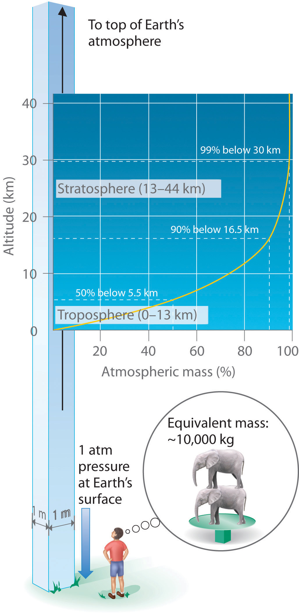Each square meter of Earth’s surface supports a column of air that is more than 200 km high and weighs about 10,000 kg at Earth’s surface, resulting in a pressure at the surface of 1.01 × 105 N/m2. This corresponds to a pressure of 101 kPa = 760 mmHg = 1 atm.
In English units, this is about 14 lb/in.2, but we are so accustomed to living under this pressure that we never notice it. Instead, what we notice are changes in the pressure, such as when our ears pop in fast elevators in skyscrapers or in airplanes during rapid changes in altitude. We make use of atmospheric pressure in many ways. We can use a drinking straw because sucking on it removes air and thereby reduces the pressure inside the straw. The atmospheric pressure pushing down on the liquid in the glass then forces the liquid up the straw.
Atmospheric pressure can be measured using a barometerA device used to measure atmospheric pressure., a device invented in 1643 by one of Galileo’s students, Evangelista Torricelli (1608–1647). A barometer may be constructed from a long glass tube that is closed at one end. It is filled with mercury and placed upside down in a dish of mercury without allowing any air to enter the tube. Some of the mercury will run out of the tube, but a relatively tall column remains inside (Figure 10.4 "A Mercury Barometer"). Why doesn’t all the mercury run out? Gravity is certainly exerting a downward force on the mercury in the tube, but it is opposed by the pressure of the atmosphere pushing down on the surface of the mercury in the dish, which has the net effect of pushing the mercury up into the tube. Because there is no air above the mercury inside the tube in a properly filled barometer (it contains a vacuum), there is no pressure pushing down on the column. Thus the mercury runs out of the tube until the pressure exerted by the mercury column itself exactly balances the pressure of the atmosphere. Under normal weather conditions at sea level, the two forces are balanced when the top of the mercury column is approximately 760 mm above the level of the mercury in the dish, as shown in Figure 10.4 "A Mercury Barometer". This value varies with meteorological conditions and altitude. In Denver, Colorado, for example, at an elevation of about 1 mile, or 1609 m (5280 ft), the height of the mercury column is 630 mm rather than 760 mm.
Figure 10.4 A Mercury Barometer

The pressure exerted by the atmosphere on the surface of the pool of mercury supports a column of mercury in the tube that is about 760 mm tall. Because the boiling point of mercury is quite high (356.73°C), there is very little mercury vapor in the space above the mercury column.
Mercury barometers have been used to measure atmospheric pressure for so long that they have their own unit for pressure: the millimeter of mercury (mmHg)A unit of pressure, often called the torr., often called the torrA unit of pressure. One torr is the same as 1 mmHg., after Torricelli. Standard atmospheric pressureThe atmospheric pressure required to support a column of mercury exactly 760 mm tall, which is also referred to as 1 atmosphere (atm). is the atmospheric pressure required to support a column of mercury exactly 760 mm tall; this pressure is also referred to as 1 atmosphere (atm)Also referred to as standard atmospheric pressure, it is the atmospheric pressure required to support a column of mercury exactly 760 mm tall.. These units are also related to the pascal:
Equation 10.4
1 atm = 760 mmHg = 760 torr = 1.01325 × 105 Pa = 101.325 kPaThus a pressure of 1 atm equals 760 mmHg exactly and is approximately equal to 100 kPa.
One of the authors visited Rocky Mountain National Park several years ago. After departing from an airport at sea level in the eastern United States, he arrived in Denver (altitude 5280 ft), rented a car, and drove to the top of the highway outside Estes Park (elevation 14,000 ft). He noticed that even slight exertion was very difficult at this altitude, where the atmospheric pressure is only 454 mmHg. Convert this pressure to
Given: pressure in millimeters of mercury
Asked for: pressure in atmospheres and kilopascals
Strategy:
Use the conversion factors in Equation 10.4 to convert from millimeters of mercury to atmospheres and kilopascals.
Solution:
From Equation 10.4, we have 1 atm = 760 mmHg = 101.325 kPa. The pressure at 14,000 ft in atm is thus
The pressure in kPa is given by
Exercise
Mt. Everest, at 29,028 ft above sea level, is the world’s tallest mountain. The normal atmospheric pressure at this altitude is about 0.308 atm. Convert this pressure to
Answer: a. 234 mmHg; b. 31.2 kPa
Barometers measure atmospheric pressure, but manometersA device used to measure the pressures of samples of gases contained in an apparatus. measure the pressures of samples of gases contained in an apparatus. The key feature of a manometer is a U-shaped tube containing mercury (or occasionally another nonvolatile liquid). A closed-end manometer is shown schematically in part (a) in Figure 10.5 "The Two Types of Manometer". When the bulb contains no gas (i.e., when its interior is a near vacuum), the heights of the two columns of mercury are the same because the space above the mercury on the left is a near vacuum (it contains only traces of mercury vapor). If a gas is released into the bulb on the right, it will exert a pressure on the mercury in the right column, and the two columns of mercury will no longer be the same height. The difference between the heights of the two columns is equal to the pressure of the gas.
Figure 10.5 The Two Types of Manometer
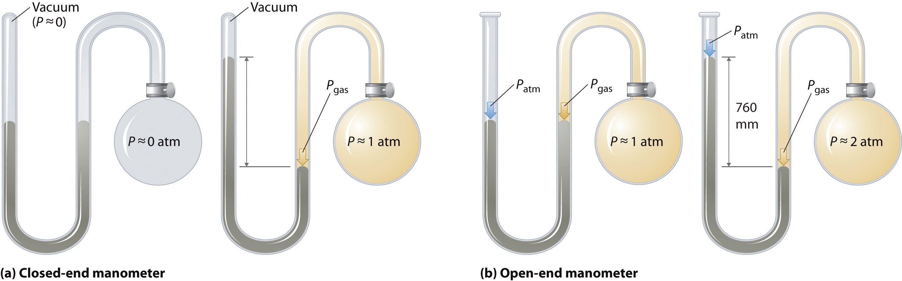(a) In a closed-end manometer, the space above the mercury column on the left (the reference arm) is essentially a vacuum (P ≈ 0), and the difference in the heights of the two columns gives the pressure of the gas contained in the bulb directly. (b) In an open-end manometer, the left (reference) arm is open to the atmosphere (P ≈ 1 atm), and the difference in the heights of the two columns gives the difference between atmospheric pressure and the pressure of the gas in the bulb.
If the tube is open to the atmosphere instead of closed, as in the open-end manometer shown in part (b) in Figure 10.5 "The Two Types of Manometer", then the two columns of mercury have the same height only if the gas in the bulb has a pressure equal to the atmospheric pressure. If the gas in the bulb has a higher pressure, the mercury in the open tube will be forced up by the gas pushing down on the mercury in the other arm of the U-shaped tube. The pressure of the gas in the bulb is therefore the sum of the atmospheric pressure (measured with a barometer) and the difference in the heights of the two columns. If the gas in the bulb has a pressure less than that of the atmosphere, then the height of the mercury will be greater in the arm attached to the bulb. In this case, the pressure of the gas in the bulb is the atmospheric pressure minus the difference in the heights of the two columns.
Suppose you want to construct a closed-end manometer to measure gas pressures in the range 0.000–0.200 atm. Because of the toxicity of mercury, you decide to use water rather than mercury. How tall a column of water do you need? (At 25°C, the density of water is 0.9970 g/cm3; the density of mercury is 13.53 g/cm3.)
Given: pressure range and densities of water and mercury
Asked for: column height
Strategy:
A Calculate the height of a column of mercury corresponding to 0.200 atm in millimeters of mercury. This is the height needed for a mercury-filled column.
B From the given densities, use a proportion to compute the height needed for a water-filled column.
Solution:
A In millimeters of mercury, a gas pressure of 0.200 atm is
Using a mercury manometer, you would need a mercury column at least 152 mm high.
B Because water is less dense than mercury, you need a taller column of water to achieve the same pressure as a given column of mercury. The height needed for a water-filled column corresponding to a pressure of 0.200 atm is proportional to the ratio of the density of mercury to the density of water :
This answer makes sense: it takes a taller column of a less dense liquid to achieve the same pressure.
Exercise
Suppose you want to design a barometer to measure atmospheric pressure in an environment that is always hotter than 30°C. To avoid using mercury, you decide to use gallium, which melts at 29.76°C; the density of liquid gallium at 25°C is 6.114 g/cm3. How tall a column of gallium do you need if P = 1.00 atm?
Answer: 1.68 m
The answer to Example 4 also tells us the maximum depth of a farmer’s well if a simple suction pump will be used to get the water out. If a column of water 2.06 m high corresponds to 0.200 atm, then 1.00 atm corresponds to a column height of
A suction pump is just a more sophisticated version of a straw: it creates a vacuum above a liquid and relies on atmospheric pressure to force the liquid up a tube. If 1 atm pressure corresponds to a 10.3 m (33.8 ft) column of water, then it is physically impossible for atmospheric pressure to raise the water in a well higher than this. Until electric pumps were invented to push water mechanically from greater depths, this factor greatly limited where people could live because obtaining water from wells deeper than about 33 ft was difficult.
Four quantities must be known for a complete physical description of a sample of a gas: temperature, volume, amount, and pressure. Pressure is force per unit area of surface; the SI unit for pressure is the pascal (Pa), defined as 1 newton per square meter (N/m2). The pressure exerted by an object is proportional to the force it exerts and inversely proportional to the area on which the force is exerted. The pressure exerted by Earth’s atmosphere, called atmospheric pressure, is about 101 kPa or 14.7 lb/in.2 at sea level. Atmospheric pressure can be measured with a barometer, a closed, inverted tube filled with mercury. The height of the mercury column is proportional to atmospheric pressure, which is often reported in units of millimeters of mercury (mmHg), also called torr. Standard atmospheric pressure, the pressure required to support a column of mercury 760 mm tall, is yet another unit of pressure: 1 atmosphere (atm). A manometer is an apparatus used to measure the pressure of a sample of a gas.
What four quantities must be known to completely describe a sample of a gas? What units are commonly used for each quantity?
If the applied force is constant, how does the pressure exerted by an object change as the area on which the force is exerted decreases? In the real world, how does this relationship apply to the ease of driving a small nail versus a large nail?
As the force on a fixed area increases, does the pressure increase or decrease? With this in mind, would you expect a heavy person to need smaller or larger snowshoes than a lighter person? Explain.
What do we mean by atmospheric pressure? Is the atmospheric pressure at the summit of Mt. Rainier greater than or less than the pressure in Miami, Florida? Why?
Which has the highest atmospheric pressure—a cave in the Himalayas, a mine in South Africa, or a beach house in Florida? Which has the lowest?
Mars has an average atmospheric pressure of 0.007 atm. Would it be easier or harder to drink liquid from a straw on Mars than on Earth? Explain your answer.
Is the pressure exerted by a 1.0 kg mass on a 2.0 m2 area greater than or less than the pressure exerted by a 1.0 kg mass on a 1.0 m2 area? What is the difference, if any, between the pressure of the atmosphere exerted on a 1.0 m2 piston and a 2.0 m2 piston?
If you used water in a barometer instead of mercury, what would be the major difference in the instrument?
Because pressure is defined as the force per unit area (P = F/A), increasing the force on a given area increases the pressure. A heavy person requires larger snowshoes than a lighter person. Spreading the force exerted on the heavier person by gravity (that is, their weight) over a larger area decreases the pressure exerted per unit of area, such as a square inch, and makes them less likely to sink into the snow.
Calculate the pressure in atmospheres and kilopascals exerted by a fish tank that is 2.0 ft long, 1.0 ft wide, and 2.5 ft high and contains 25.0 gal of water in a room that is at 20°C; the tank itself weighs 15 lb ( = 1.00 g/cm3 at 20°C). If the tank were 1 ft long, 1 ft wide, and 5 ft high, would it exert the same pressure? Explain your answer.
Calculate the pressure in pascals and in atmospheres exerted by a carton of milk that weighs 1.5 kg and has a base of 7.0 cm × 7.0 cm. If the carton were lying on its side (height = 25 cm), would it exert more or less pressure? Explain your reasoning.
If atmospheric pressure at sea level is 1.0 × 105 Pa, what is the mass of air in kilograms above a 1.0 cm2 area of your skin as you lie on the beach? If atmospheric pressure is 8.2 × 104 Pa on a mountaintop, what is the mass of air in kilograms above a 4.0 cm2 patch of skin?
Complete the following table:
| atm | kPa | mmHg | torr |
|---|---|---|---|
| 1.40 | |||
| 723 | |||
| 43.2 |
The SI unit of pressure is the pascal, which is equal to 1 N/m2. Show how the product of the mass of an object and the acceleration due to gravity result in a force that, when exerted on a given area, leads to a pressure in the correct SI units. What mass in kilograms applied to a 1.0 cm2 area is required to produce a pressure of
If you constructed a manometer to measure gas pressures over the range 0.60–1.40 atm using the liquids given in the following table, how tall a column would you need for each liquid? The density of mercury is 13.5 g/cm3. Based on your results, explain why mercury is still used in barometers, despite its toxicity.
| Liquid Density (20°C) | Column Height (m) | |
|---|---|---|
| isopropanol | 0.785 | |
| coconut oil | 0.924 | |
| glycerine | 1.259 |
5.4 kPa or 5.3 × 10−2 atm; 11 kPa, 1.1 × 10−3 atm; the same force acting on a smaller area results in a greater pressure.
Early scientists explored the relationships among the pressure of a gas (P) and its temperature (T), volume (V), and amount (n) by holding two of the four variables constant (amount and temperature, for example), varying a third (such as pressure), and measuring the effect of the change on the fourth (in this case, volume). The history of their discoveries provides several excellent examples of the scientific method as presented in Chapter 1 "Introduction to Chemistry".
As the pressure on a gas increases, the volume of the gas decreases because the gas particles are forced closer together. Conversely, as the pressure on a gas decreases, the gas volume increases because the gas particles can now move farther apart. Weather balloons get larger as they rise through the atmosphere to regions of lower pressure because the volume of the gas has increased; that is, the atmospheric gas exerts less pressure on the surface of the balloon, so the interior gas expands until the internal and external pressures are equal.
Boyle, the youngest (and 14th!) child of the Earl of Cork, was an important early figure in chemistry whose views were often at odds with accepted wisdom. Boyle’s studies of gases are reported to have utilized a very tall J-tube that he set up in the entryway of his house, which was several stories tall. He is known for the gas law that bears his name and for his book, The Sceptical Chymist, which was published in 1661 and influenced chemists for many years after his death. In addition, one of Boyle’s early essays on morals is said to have inspired Jonathan Swift to write Gulliver’s Travels.
The Irish chemist Robert Boyle (1627–1691) carried out some of the earliest experiments that determined the quantitative relationship between the pressure and the volume of a gas. Boyle used a J-shaped tube partially filled with mercury, as shown in Figure 10.6 "Boyle’s Experiment Using a J-Shaped Tube to Determine the Relationship between Gas Pressure and Volume". In these experiments, a small amount of a gas or air is trapped above the mercury column, and its volume is measured at atmospheric pressure and constant temperature. More mercury is then poured into the open arm to increase the pressure on the gas sample. The pressure on the gas is atmospheric pressure plus the difference in the heights of the mercury columns, and the resulting volume is measured. This process is repeated until either there is no more room in the open arm or the volume of the gas is too small to be measured accurately. Data such as those from one of Boyle’s own experiments may be plotted in several ways (Figure 10.7 "Plots of Boyle’s Data"). A simple plot of V versus P gives a curve called a hyperbola and reveals an inverse relationship between pressure and volume: as the pressure is doubled, the volume decreases by a factor of two. This relationship between the two quantities is described as follows:
Equation 10.5
PV = constantFigure 10.6 Boyle’s Experiment Using a J-Shaped Tube to Determine the Relationship between Gas Pressure and Volume

(a) Initially the gas is at a pressure of 1 atm = 760 mmHg (the mercury is at the same height in both the arm containing the sample and the arm open to the atmosphere); its volume is V. (b) If enough mercury is added to the right side to give a difference in height of 760 mmHg between the two arms, the pressure of the gas is 760 mmHg (atmospheric pressure) + 760 mmHg = 1520 mmHg and the volume is V/2. (c) If an additional 760 mmHg is added to the column on the right, the total pressure on the gas increases to 2280 mmHg, and the volume of the gas decreases to V/3.
Figure 10.7 Plots of Boyle’s Data

(a) Here are actual data from a typical experiment conducted by Boyle. Boyle used non-SI units to measure the volume (in.3 rather than cm3) and the pressure (in. Hg rather than mmHg). (b) This plot of pressure versus volume is a hyperbola. Because PV is a constant, decreasing the pressure by a factor of two results in a twofold increase in volume and vice versa. (c) A plot of volume versus 1/pressure for the same data shows the inverse linear relationship between the two quantities, as expressed by the equation V = constant/P.
Dividing both sides by P gives an equation illustrating the inverse relationship between P and V:
Equation 10.6
where the ∝ symbol is read “is proportional to.” A plot of V versus 1/P is thus a straight line whose slope is equal to the constant in Equation 10.5 and Equation 10.6. Dividing both sides of Equation 10.5 by V instead of P gives a similar relationship between P and 1/V. The numerical value of the constant depends on the amount of gas used in the experiment and on the temperature at which the experiments are carried out. This relationship between pressure and volume is known as Boyle’s lawA law that states that at constant temperature, the volume of a fixed amount of a gas is inversely proportional to its pressure., after its discoverer, and can be stated as follows: At constant temperature, the volume of a fixed amount of a gas is inversely proportional to its pressure.
Hot air rises, which is why hot-air balloons ascend through the atmosphere and why warm air collects near the ceiling and cooler air collects at ground level. Because of this behavior, heating registers are placed on or near the floor, and vents for air-conditioning are placed on or near the ceiling. The fundamental reason for this behavior is that gases expand when they are heated. Because the same amount of substance now occupies a greater volume, hot air is less dense than cold air. The substance with the lower density—in this case hot air—rises through the substance with the higher density, the cooler air.
The first experiments to quantify the relationship between the temperature and the volume of a gas were carried out in 1783 by an avid balloonist, the French chemist Jacques Alexandre César Charles (1746–1823). Charles’s initial experiments showed that a plot of the volume of a given sample of gas versus temperature (in degrees Celsius) at constant pressure is a straight line. Similar but more precise studies were carried out by another balloon enthusiast, the Frenchman Joseph-Louis Gay-Lussac (1778–1850), who showed that a plot of V versus T was a straight line that could be extrapolated to a point at zero volume, a theoretical condition now known to correspond to −273.15°C (Figure 10.8 "The Relationship between Volume and Temperature").A sample of gas cannot really have a volume of zero because any sample of matter must have some volume. Furthermore, at 1 atm pressure all gases liquefy at temperatures well above −273.15°C. Note from part (a) in Figure 10.8 "The Relationship between Volume and Temperature" that the slope of the plot of V versus T varies for the same gas at different pressures but that the intercept remains constant at −273.15°C. Similarly, as shown in part (b) in Figure 10.8 "The Relationship between Volume and Temperature", plots of V versus T for different amounts of varied gases are straight lines with different slopes but the same intercept on the T axis.
In 1783, Charles filled a balloon (“aerostatic globe”) with hydrogen (generated by the reaction of iron with more than 200 kg of acid over several days) and flew successfully for almost an hour. When the balloon descended in a nearby village, however, the terrified townspeople destroyed it. In 1804, Gay-Lussac managed to ascend to 23,000 ft (more than 7000 m) to collect samples of the atmosphere to analyze its composition as a function of altitude. In the process, he had trouble breathing and nearly froze to death, but he set an altitude record that endured for decades. (To put Gay-Lussac’s achievement in perspective, recall that modern jetliners cruise at only 35,000 ft!)
The significance of the invariant T intercept in plots of V versus T was recognized in 1848 by the British physicist William Thomson (1824–1907), later named Lord Kelvin. He postulated that −273.15°C was the lowest possible temperature that could theoretically be achieved, for which he coined the term absolute zero (0 K)The lowest possible temperature that can be theoretically achieved; it corresponds to −273.15°C..
We can state Charles’s and Gay-Lussac’s findings in simple terms: At constant pressure, the volume of a fixed amount of gas is directly proportional to its absolute temperature (in kelvins). This relationship, illustrated in part (b) in Figure 10.8 "The Relationship between Volume and Temperature", is often referred to as Charles’s lawA law that states that at constant pressure, the volume of a fixed amount of gas is directly proportional to its absolute temperature (in kelvins). and is stated mathematically as
Equation 10.7
Charles’s law is valid for virtually all gases at temperatures well above their boiling points. Note that the temperature must be expressed in kelvins, not in degrees Celsius.
Figure 10.8 The Relationship between Volume and Temperature

(a) In these plots of volume versus temperature for equal-sized samples of H2 at three different pressures, the solid lines show the experimentally measured data down to −100°C, and the broken lines show the extrapolation of the data to V = 0. The temperature scale is given in both degrees Celsius and kelvins. Although the slopes of the lines decrease with increasing pressure, all of the lines extrapolate to the same temperature at V = 0 (−273.15°C = 0 K). (b) In these plots of volume versus temperature for different amounts of selected gases at 1 atm pressure, all the plots extrapolate to a value of V = 0 at −273.15°C, regardless of the identity or the amount of the gas.
We can demonstrate the relationship between the volume and the amount of a gas by filling a balloon; as we add more gas, the balloon gets larger. The specific quantitative relationship was discovered by the Italian chemist Amedeo Avogadro, who recognized the importance of Gay-Lussac’s work on combining volumes of gases. In 1811, Avogadro postulated that, at the same temperature and pressure, equal volumes of gases contain the same number of gaseous particles (Figure 10.9 "Avogadro’s Hypothesis"). (This is the historic “Avogadro’s hypothesis” introduced in Chapter 1 "Introduction to Chemistry".) A logical corollary, sometimes called Avogadro’s lawA law that states that at constant temperature and pressure, the volume of a sample of gas is directly proportional to the number of moles of gas in the sample., describes the relationship between the volume and the amount of a gas: At constant temperature and pressure, the volume of a sample of gas is directly proportional to the number of moles of gas in the sample. Stated mathematically,
Equation 10.8
This relationship is valid for most gases at relatively low pressures, but deviations from strict linearity are observed at elevated pressures.
For a sample of gas,
V increases as P decreases (and vice versa)
V increases as T increases (and vice versa)
V increases as n increases (and vice versa)
Figure 10.9 Avogadro’s Hypothesis

Equal volumes of four different gases at the same temperature and pressure contain the same number of gaseous particles. Because the molar mass of each gas is different, the mass of each gas sample is different even though all contain 1 mol of gas.
The relationships among the volume of a gas and its pressure, temperature, and amount are summarized in Figure 10.10 "The Empirically Determined Relationships among Pressure, Volume, Temperature, and Amount of a Gas". Volume increases with increasing temperature or amount but decreases with increasing pressure.
Figure 10.10 The Empirically Determined Relationships among Pressure, Volume, Temperature, and Amount of a Gas

The thermometer and pressure gauge indicate the temperature and the pressure qualitatively, the level in the flask indicates the volume, and the number of particles in each flask indicates relative amounts.
Boyle showed that the volume of a sample of a gas is inversely proportional to its pressure (Boyle’s law), Charles and Gay-Lussac demonstrated that the volume of a gas is directly proportional to its temperature (in kelvins) at constant pressure (Charles’s law), and Avogadro postulated that the volume of a gas is directly proportional to the number of moles of gas present (Avogadro’s law). Plots of the volume of gases versus temperature extrapolate to zero volume at −273.15°C, which is absolute zero (0 K), the lowest temperature possible. Charles’s law implies that the volume of a gas is directly proportional to its absolute temperature.
Sketch a graph of the volume of a gas versus the pressure on the gas. What would the graph of V versus P look like if volume was directly proportional to pressure?
What properties of a gas are described by Boyle’s law, Charles’s law, and Avogadro’s law? In each law, what quantities are held constant? Why does the constant in Boyle’s law depend on the amount of gas used and the temperature at which the experiments are carried out?
Use Charles’s law to explain why cooler air sinks.
Use Boyle’s law to explain why it is dangerous to heat even a small quantity of water in a sealed container.

A 1.00 mol sample of gas at 25°C and 1.0 atm has an initial volume of 22.4 L. Calculate the results of each change, assuming all the other conditions remain constant.
A 1.00 mol sample of gas is at 300 K and 4.11 atm. What is the volume of the gas under these conditions? The sample is compressed to 6.0 atm at constant temperature, giving a volume of 3.99 L. Is this result consistent with Boyle’s law?
In Section 10.3 "Relationships among Pressure, Temperature, Volume, and Amount", you learned how the volume of a gas changes when its pressure, temperature, or amount is changed, as long as the other two variables are held constant. In this section, we describe how these relationships can be combined to give a general expression that describes the behavior of a gas.
Any set of relationships between a single quantity (such as V) and several other variables (P, T, and n) can be combined into a single expression that describes all the relationships simultaneously. The three individual expressions derived in Section 10.3 "Relationships among Pressure, Temperature, Volume, and Amount" are as follows:
Boyle’s law
Charles’s law
Avogadro’s law
Combining these three expressions gives
Equation 10.9
which shows that the volume of a gas is proportional to the number of moles and the temperature and inversely proportional to the pressure. This expression can also be written as
Equation 10.10
By convention, the proportionality constant in Equation 10.10 is called the gas constantA proportionality constant that is used in the ideal gas law., which is represented by the letter R. Inserting R into Equation 10.10 gives
Equation 10.11
Clearing the fractions by multiplying both sides of Equation 10.11 by P gives
Equation 10.12
PV = nRTThis equation is known as the ideal gas lawA law relating pressure, temperature, volume, and the amount of an ideal gas..
An ideal gasA hypothetical gaseous substance whose behavior is independent of attractive and repulsive forces. is defined as a hypothetical gaseous substance whose behavior is independent of attractive and repulsive forces and can be completely described by the ideal gas law. In reality, there is no such thing as an ideal gas, but an ideal gas is a useful conceptual model that allows us to understand how gases respond to changing conditions. As we shall see, under many conditions, most real gases exhibit behavior that closely approximates that of an ideal gas. The ideal gas law can therefore be used to predict the behavior of real gases under most conditions. As you will learn in Section 10.8 "The Behavior of Real Gases", the ideal gas law does not work well at very low temperatures or very high pressures, where deviations from ideal behavior are most commonly observed.
Significant deviations from ideal gas behavior commonly occur at low temperatures and very high pressures.
Before we can use the ideal gas law, however, we need to know the value of the gas constant R. Its form depends on the units used for the other quantities in the expression. If V is expressed in liters (L), P in atmospheres (atm), T in kelvins (K), and n in moles (mol), then
Equation 10.13
R = 0.082057 (L·atm)/(K·mol)Because the product PV has the units of energy, as described in Chapter 5 "Energy Changes in Chemical Reactions", Section 5.1 "Energy and Work" and Essential Skills 4 (Chapter 5 "Energy Changes in Chemical Reactions", Section 5.6 "Essential Skills 4"), R can also have units of J/(K·mol) or cal/(K·mol):
Equation 10.14
R = 8.3145 J/(K·mol) = 1.9872 cal/(K·mol)Scientists have chosen a particular set of conditions to use as a reference: 0°C (273.15 K) and 1 atm pressure, referred to as standard temperature and pressure (STP)The conditions 0°C (273.15 K) and 1 atm pressure for a gas.. We can calculate the volume of 1.000 mol of an ideal gas under standard conditions using the variant of the ideal gas law given in Equation 10.11:
Equation 10.15
Thus the volume of 1 mol of an ideal gas at 0°C and 1 atm pressure is 22.41 L, approximately equivalent to the volume of three basketballs. The quantity 22.41 L is called the standard molar volumeThe volume of 1 mol of an ideal gas at STP (0°C and 1 atm pressure), which is 22.41 L. of an ideal gas. The molar volumes of several real gases at STP are given in Table 10.3 "Molar Volumes of Selected Gases at Standard Temperature (0°C) and Pressure (1 atm)", which shows that the deviations from ideal gas behavior are quite small. Thus the ideal gas law does a good job of approximating the behavior of real gases at STP. The relationships described in Section 10.3 "Relationships among Pressure, Temperature, Volume, and Amount" as Boyle’s, Charles’s, and Avogadro’s laws are simply special cases of the ideal gas law in which two of the four parameters (P, V, T, and n) are held fixed.
Table 10.3 Molar Volumes of Selected Gases at Standard Temperature (0°C) and Pressure (1 atm)
| Gas | Molar Volume (L) |
|---|---|
| He | 22.434 |
| Ar | 22.397 |
| H2 | 22.433 |
| N2 | 22.402 |
| O2 | 22.397 |
| CO2 | 22.260 |
| NH3 | 22.079 |
If n, R, and T are all constant in Equation 10.11, the equation reduces to
Equation 10.16
which is exactly the same as Boyle’s law in Equation 10.6.
Similarly, Charles’s law states that the volume of a fixed quantity of gas is directly proportional to its temperature at constant pressure. If n and P in Equation 10.11 are fixed, then
Equation 10.17
which is exactly the same as Equation 10.7.
The ideal gas law allows us to calculate the value of the fourth variable for a gaseous sample if we know the values of any three of the four variables (P, V, T, and n). It also allows us to predict the final state of a sample of a gas (i.e., its final temperature, pressure, volume, and amount) following any changes in conditions if the parameters (P, V, T, and n) are specified for an initial state. Some applications are illustrated in the following examples. The approach used throughout is always to start with the same equation—the ideal gas law—and then determine which quantities are given and which need to be calculated. Let’s begin with simple cases in which we are given three of the four parameters needed for a complete physical description of a gaseous sample.
The balloon that Charles used for his initial flight in 1783 was destroyed, but we can estimate that its volume was 31,150 L (1100 ft3), given the dimensions recorded at the time. If the temperature at ground level was 86°F (30°C) and the atmospheric pressure was 745 mmHg, how many moles of hydrogen gas were needed to fill the balloon?
Given: volume, temperature, and pressure
Asked for: amount of gas
Strategy:
A Solve the ideal gas law for the unknown quantity, in this case n.
B Make sure that all quantities are given in units that are compatible with the units of the gas constant. If necessary, convert them to the appropriate units, insert them into the equation you have derived, and then calculate the number of moles of hydrogen gas needed.
Solution:
A We are given values for P, T, and V and asked to calculate n. If we solve the ideal gas law (Equation 10.12) for n, we obtain
B P and T are given in units that are not compatible with the units of the gas constant [R = 0.082057 (L·atm)/(K·mol)]. We must therefore convert the temperature to kelvins and the pressure to atmospheres:
Substituting these values into the expression we derived for n, we obtain
Exercise
Suppose that an “empty” aerosol spray-paint can has a volume of 0.406 L and contains 0.025 mol of a propellant gas such as CO2. What is the pressure of the gas at 25°C?
Answer: 1.5 atm
In Example 5, we were given three of the four parameters needed to describe a gas under a particular set of conditions, and we were asked to calculate the fourth. We can also use the ideal gas law to calculate the effect of changes in any of the specified conditions on any of the other parameters, as shown in Example 6.
Suppose that Charles had changed his plans and carried out his initial flight not in August but on a cold day in January, when the temperature at ground level was −10°C (14°F). How large a balloon would he have needed to contain the same amount of hydrogen gas at the same pressure as in Example 5?
Given: temperature, pressure, amount, and volume in August; temperature in January
Asked for: volume in January
Strategy:
A Use the results from Example 5 for August as the initial conditions and then calculate the change in volume due to the change in temperature from 86°F to 14°F. Begin by constructing a table showing the initial and final conditions.
B Rearrange the ideal gas law to isolate those quantities that differ between the initial and final states on one side of the equation, in this case V and T.
C Equate the ratios of those terms that change for the two sets of conditions. Making sure to use the appropriate units, insert the quantities and solve for the unknown parameter.
Solution:
A To see exactly which parameters have changed and which are constant, prepare a table of the initial and final conditions:
| August (initial) | January (final) | |
|---|---|---|
| T | 30°C = 303 K | −10°C = 263 K |
| P | 0.980 atm | 0.980 atm |
| n | 1.23 × 103 mol H2 | 1.23 × 103 mol H2 |
| V | 31,150 L | ? |
Thus we are asked to calculate the effect of a change in temperature on the volume of a fixed amount of gas at constant pressure.
B Recall that we can rearrange the ideal gas law to give
Both n and P are the same in both cases, which means that nR/P is a constant. Dividing both sides by T gives
This is the relationship first noted by Charles.
C We see from this expression that under conditions where the amount (n) of gas and the pressure (P) do not change, the ratio V/T also does not change. If we have two sets of conditions for the same amount of gas at the same pressure, we can therefore write
where the subscripts 1 and 2 refer to the initial and final conditions, respectively. Solving for V2 and inserting the given quantities in the appropriate units, we obtain
It is important to check your answer to be sure that it makes sense, just in case you have accidentally inverted a quantity or multiplied rather than divided. In this case, the temperature of the gas decreases. Because we know that gas volume decreases with decreasing temperature, the final volume must be less than the initial volume, so the answer makes sense. We could have calculated the new volume by plugging all the given numbers into the ideal gas law, but it is generally much easier and faster to focus on only the quantities that change.
Exercise
At a laboratory party, a helium-filled balloon with a volume of 2.00 L at 22°C is dropped into a large container of liquid nitrogen (T = −196°C). What is the final volume of the gas in the balloon?
Answer: 0.52 L
Example 6 illustrates the relationship originally observed by Charles. We could work through similar examples illustrating the inverse relationship between pressure and volume noted by Boyle (PV = constant) and the relationship between volume and amount observed by Avogadro (V/n = constant). We will not do so, however, because it is more important to note that the historically important gas laws are only special cases of the ideal gas law in which two quantities are varied while the other two remain fixed. The method used in Example 6 can be applied in any such case, as we demonstrate in Example 7 (which also shows why heating a closed container of a gas, such as a butane lighter cartridge or an aerosol can, may cause an explosion).
Aerosol cans are prominently labeled with a warning such as “Do not incinerate this container when empty.” Assume that you did not notice this warning and tossed the “empty” aerosol can in Exercise 5 (0.025 mol in 0.406 L, initially at 25°C and 1.5 atm internal pressure) into a fire at 750°C. What would be the pressure inside the can (if it did not explode)?
Given: initial volume, amount, temperature, and pressure; final temperature
Asked for: final pressure
Strategy:
Follow the strategy outlined in Example 6.
Solution:
Prepare a table to determine which parameters change and which are held constant:
| Initial | Final | |
|---|---|---|
| V | 0.406 L | 0.406 L |
| n | 0.025 mol | 0.025 mol |
| T | 25°C = 298 K | 750°C = 1023 K |
| P | 1.5 atm | ? |
Once again, two parameters are constant while one is varied, and we are asked to calculate the fourth. As before, we begin with the ideal gas law and rearrange it as necessary to get all the constant quantities on one side. In this case, because V and n are constant, we rearrange to obtain
Dividing both sides by T, we obtain an equation analogous to the one in Example 6, P/T = nR/V = constant. Thus the ratio of P to T does not change if the amount and volume of a gas are held constant. We can thus write the relationship between any two sets of values of P and T for the same sample of gas at the same volume as
In this example, P1 = 1.5 atm, T1 = 298 K, and T2 = 1023 K, and we are asked to find P2. Solving for P2 and substituting the appropriate values, we obtain
This pressure is more than enough to rupture a thin sheet metal container and cause an explosion!
Exercise
Suppose that a fire extinguisher, filled with CO2 to a pressure of 20.0 atm at 21°C at the factory, is accidentally left in the sun in a closed automobile in Tucson, Arizona, in July. The interior temperature of the car rises to 160°F (71.1°C). What is the internal pressure in the fire extinguisher?
Answer: 23.4 atm
In Example 10.6 and Example 10.7, two of the four parameters (P, V, T, and n) were fixed while one was allowed to vary, and we were interested in the effect on the value of the fourth. In fact, we often encounter cases where two of the variables P, V, and T are allowed to vary for a given sample of gas (hence n is constant), and we are interested in the change in the value of the third under the new conditions. If we rearrange the ideal gas law so that P, V, and T, the quantities that change, are on one side and the constant terms (R and n for a given sample of gas) are on the other, we obtain
Equation 10.18
Thus the quantity PV/T is constant if the total amount of gas is constant. We can therefore write the relationship between any two sets of parameters for a sample of gas as follows:
Equation 10.19
This equation can be solved for any of the quantities P2, V2, or T2 if the initial conditions are known, as shown in Example 8.
We saw in Example 5 that Charles used a balloon with a volume of 31,150 L for his initial ascent and that the balloon contained 1.23 × 103 mol of H2 gas initially at 30°C and 745 mmHg. Suppose that Gay-Lussac had also used this balloon for his record-breaking ascent to 23,000 ft and that the pressure and temperature at that altitude were 312 mmHg and −30°C, respectively. To what volume would the balloon have had to expand to hold the same amount of hydrogen gas at the higher altitude?
Given: initial pressure, temperature, amount, and volume; final pressure and temperature
Asked for: final volume
Strategy:
Follow the strategy outlined in Example 6.
Solution:
Begin by setting up a table of the two sets of conditions:
| Initial | Final | |
|---|---|---|
| P | 745 mmHg = 0.980 atm | 312 mmHg = 0.411 atm |
| T | 30°C = 303 K | −30°C = 243 K |
| n | 1.23 × 103 mol H2 | 1.23 × 103 mol H2 |
| V | 31,150 L | ? |
Thus all the quantities except V2 are known. Solving Equation 10.19 for V2 and substituting the appropriate values give
Does this answer make sense? Two opposing factors are at work in this problem: decreasing the pressure tends to increase the volume of the gas, while decreasing the temperature tends to decrease the volume of the gas. Which do we expect to predominate? The pressure drops by more than a factor of two, while the absolute temperature drops by only about 20%. Because the volume of a gas sample is directly proportional to both T and 1/P, the variable that changes the most will have the greatest effect on V. In this case, the effect of decreasing pressure predominates, and we expect the volume of the gas to increase, as we found in our calculation.
We could also have solved this problem by solving the ideal gas law for V and then substituting the relevant parameters for an altitude of 23,000 ft:
Except for a difference caused by rounding to the last significant figure, this is the same result we obtained previously. There is often more than one “right” way to solve chemical problems.
Exercise
A steel cylinder of compressed argon with a volume of 0.400 L was filled to a pressure of 145 atm at 10°C. At 1.00 atm pressure and 25°C, how many 15.0 mL incandescent light bulbs could be filled from this cylinder? (Hint: find the number of moles of argon in each container.)
Answer: 4.07 × 103
The ideal gas law can also be used to calculate molar masses of gases from experimentally measured gas densities. To see how this is possible, we first rearrange the ideal gas law to obtain
Equation 10.20
The left side has the units of moles per unit volume (mol/L). The number of moles of a substance equals its mass (m, in grams) divided by its molar mass (M, in grams per mole):
Equation 10.21
Substituting this expression for n into Equation 10.20 gives
Equation 10.22
Because m/V is the density d of a substance, we can replace m/V by d and rearrange to give
Equation 10.23
The distance between particles in gases is large compared to the size of the particles, so their densities are much lower than the densities of liquids and solids. Consequently, gas density is usually measured in grams per liter (g/L) rather than grams per milliliter (g/mL).
Calculate the density of butane at 25°C and a pressure of 750 mmHg.
Given: compound, temperature, and pressure
Asked for: density
Strategy:
A Calculate the molar mass of butane and convert all quantities to appropriate units for the value of the gas constant.
B Substitute these values into Equation 10.23 to obtain the density.
Solution:
A The molar mass of butane (C4H10) is
(4)(12.011) + (10)(1.0079) = 58.123 g/molUsing 0.082057 (L·atm)/(K·mol) for R means that we need to convert the temperature from degrees Celsius to kelvins (T = 25 + 273 = 298 K) and the pressure from millimeters of mercury to atmospheres:
B Substituting these values into Equation 10.23 gives
Exercise
Radon (Rn) is a radioactive gas formed by the decay of naturally occurring uranium in rocks such as granite. It tends to collect in the basements of houses and poses a significant health risk if present in indoor air. Many states now require that houses be tested for radon before they are sold. Calculate the density of radon at 1.00 atm pressure and 20°C and compare it with the density of nitrogen gas, which constitutes 80% of the atmosphere, under the same conditions to see why radon is found in basements rather than in attics.
Answer: radon, 9.23 g/L; N2, 1.17 g/L
A common use of Equation 10.23 is to determine the molar mass of an unknown gas by measuring its density at a known temperature and pressure. This method is particularly useful in identifying a gas that has been produced in a reaction, and it is not difficult to carry out. A flask or glass bulb of known volume is carefully dried, evacuated, sealed, and weighed empty. It is then filled with a sample of a gas at a known temperature and pressure and reweighed. The difference in mass between the two readings is the mass of the gas. The volume of the flask is usually determined by weighing the flask when empty and when filled with a liquid of known density such as water. The use of density measurements to calculate molar masses is illustrated in Example 10.
The reaction of a copper penny with nitric acid results in the formation of a red-brown gaseous compound containing nitrogen and oxygen. A sample of the gas at a pressure of 727 mmHg and a temperature of 18°C weighs 0.289 g in a flask with a volume of 157.0 mL. Calculate the molar mass of the gas and suggest a reasonable chemical formula for the compound.
Given: pressure, temperature, mass, and volume
Asked for: molar mass and chemical formula
Strategy:
A Solve Equation 10.23 for the molar mass of the gas and then calculate the density of the gas from the information given.
B Convert all known quantities to the appropriate units for the gas constant being used. Substitute the known values into your equation and solve for the molar mass.
C Propose a reasonable empirical formula using the atomic masses of nitrogen and oxygen and the calculated molar mass of the gas.
Solution:
A Solving Equation 10.23 for the molar mass gives
Density is the mass of the gas divided by its volume:
B We must convert the other quantities to the appropriate units before inserting them into the equation:
The molar mass of the unknown gas is thus
C The atomic masses of N and O are approximately 14 and 16, respectively, so we can construct a list showing the masses of possible combinations:
The most likely choice is NO2 which is in agreement with the data. The red-brown color of smog also results from the presence of NO2 gas.
Exercise
You are in charge of interpreting the data from an unmanned space probe that has just landed on Venus and sent back a report on its atmosphere. The data are as follows: pressure, 90 atm; temperature, 557°C; density, 58 g/L. The major constituent of the atmosphere (>95%) is carbon. Calculate the molar mass of the major gas present and identify it.
Answer: 44 g/mol; CO2
The empirical relationships among the volume, the temperature, the pressure, and the amount of a gas can be combined into the ideal gas law, PV = nRT. The proportionality constant, R, is called the gas constant and has the value 0.08206 (L·atm)/(K·mol), 8.3145 J/(K·mol), or 1.9872 cal/(K·mol), depending on the units used. The ideal gas law describes the behavior of an ideal gas, a hypothetical substance whose behavior can be explained quantitatively by the ideal gas law and the kinetic molecular theory of gases. Standard temperature and pressure (STP) is 0°C and 1 atm. The volume of 1 mol of an ideal gas at STP is 22.41 L, the standard molar volume. All of the empirical gas relationships are special cases of the ideal gas law in which two of the four parameters are held constant. The ideal gas law allows us to calculate the value of the fourth quantity (P, V, T, or n) needed to describe a gaseous sample when the others are known and also predict the value of these quantities following a change in conditions if the original conditions (values of P, V, T, and n) are known. The ideal gas law can also be used to calculate the density of a gas if its molar mass is known or, conversely, the molar mass of an unknown gas sample if its density is measured.
Ideal gas law
Equation 10.12: PV = nRT
Relationship between initial and final conditions
Density of a gas
For an ideal gas, is volume directly proportional or inversely proportional to temperature? What is the volume of an ideal gas at absolute zero?
What is meant by STP? If a gas is at STP, what further information is required to completely describe the state of the gas?
For a given amount of a gas, the volume, temperature, and pressure under any one set of conditions are related to the volume, the temperature, and the pressure under any other set of conditions by the equation Derive this equation from the ideal gas law. At constant temperature, this equation reduces to one of the laws discussed in Section 10.3 "Relationships among Pressure, Temperature, Volume, and Amount"; which one? At constant pressure, this equation reduces to one of the laws discussed in Section 10.3 "Relationships among Pressure, Temperature, Volume, and Amount"; which one?
Predict the effect of each change on one variable if the other variables are held constant.
What would the ideal gas law be if the following were true?
Given the following initial and final values, what additional information is needed to solve the problem using the ideal gas law?
| Given | Solve for |
|---|---|
| V1, T1, T2, n1 | n 2 |
| P1, P2, T2, n2 | n 1 |
| T1, T2 | V 2 |
| P1, n1 | P 2 |
Given the following information and using the ideal gas law, what equation would you use to solve the problem?
| Given | Solve for |
|---|---|
| P1, P2, T1 | T 2 |
| V1, n1, n2 | V 2 |
| T1, T2, V1, V2, n2 | n 1 |
Using the ideal gas law as a starting point, derive the relationship between the density of a gas and its molar mass. Which would you expect to be denser—nitrogen or oxygen? Why does radon gas accumulate in basements and mine shafts?
Use the ideal gas law to derive an equation that relates the remaining variables for a sample of an ideal gas if the following are held constant.
Tennis balls that are made for Denver, Colorado, feel soft and do not bounce well at lower altitudes. Use the ideal gas law to explain this observation. Will a tennis ball designed to be used at sea level be harder or softer and bounce better or worse at higher altitudes?
Calculate the number of moles in each sample at STP.
Calculate the number of moles in each sample at STP.
Calculate the mass of each sample at STP.
Calculate the mass of each sample at STP.
Calculate the volume in liters of each sample at STP.
Calculate the volume in liters of each sample at STP.
Calculate the volume of each gas at STP.
Calculate the volume of each gas at STP.
A 8.60 L tank of nitrogen gas at a pressure of 455 mmHg is connected to an empty tank with a volume of 5.35 L. What is the final pressure in the system after the valve connecting the two tanks is opened? Assume that the temperature is constant.
At constant temperature, what pressure in atmospheres is needed to compress 14.2 L of gas initially at 25.2 atm to a volume of 12.4 L? What pressure is needed to compress 27.8 L of gas to 20.6 L under similar conditions?
One method for preparing hydrogen gas is to pass HCl gas over hot aluminum; the other product of the reaction is AlCl3. If you wanted to use this reaction to fill a balloon with a volume of 28,500 L at sea level and a temperature of 78°F, what mass of aluminum would you need? What volume of HCl at STP would you need?
An 3.50 g sample of acetylene is burned in excess oxygen according to the following reaction:
2 C2H2(g) + 5 O2(g) → 4 CO2(g) + 2 H2O(l)At STP, what volume of CO2(g) is produced?
Calculate the density of ethylene (C2H4) under each set of conditions.
Determine the density of O2 under each set of conditions.
At 140°C, the pressure of a diatomic gas in a 3.0 L flask is 635 kPa. The mass of the gas is 88.7 g. What is the most likely identity of the gas?
What volume must a balloon have to hold 6.20 kg of H2 for an ascent from sea level to an elevation of 20,320 ft, where the temperature is −37°C and the pressure is 369 mmHg?
What must be the volume of a balloon that can hold 313.0 g of helium gas and ascend from sea level to an elevation of 1.5 km, where the temperature is 10.0°C and the pressure is 635.4 mmHg?
A typical automobile tire is inflated to a pressure of 28.0 lb/in.2 Assume that the tire is inflated when the air temperature is 20°C; the car is then driven at high speeds, which increases the temperature of the tire to 43°C. What is the pressure in the tire? If the volume of the tire had increased by 8% at the higher temperature, what would the pressure be?
The average respiratory rate for adult humans is 20 breaths per minute. If each breath has a volume of 310 mL of air at 20°C and 0.997 atm, how many moles of air does a person inhale each day? If the density of air is 1.19 kg/m3, what is the average molecular mass of air?
Kerosene has a self-ignition temperature of 255°C. It is a common accelerant used by arsonists, but its presence is easily detected in fire debris by a variety of methods. If a 1.0 L glass bottle containing a mixture of air and kerosene vapor at an initial pressure of 1 atm and an initial temperature of 23°C is pressurized, at what pressure would the kerosene vapor ignite?
281 mmHg
20.9 kg Al, 5.20 × 104 L HCl
2174 L
In our use of the ideal gas law thus far, we have focused entirely on the properties of pure gases with only a single chemical species. But what happens when two or more gases are mixed? In this section, we describe how to determine the contribution of each gas present to the total pressure of the mixture.
The ideal gas law assumes that all gases behave identically and that their behavior is independent of attractive and repulsive forces. If volume and temperature are held constant, the ideal gas equation can be rearranged to show that the pressure of a sample of gas is directly proportional to the number of moles of gas present:
Equation 10.24
Nothing in the equation depends on the nature of the gas—only the amount.
With this assumption, let’s suppose we have a mixture of two ideal gases that are present in equal amounts. What is the total pressure of the mixture? Because the pressure depends on only the total number of particles of gas present, the total pressure of the mixture will simply be twice the pressure of either component. More generally, the total pressure exerted by a mixture of gases at a given temperature and volume is the sum of the pressures exerted by each gas alone. Furthermore, if we know the volume, the temperature, and the number of moles of each gas in a mixture, then we can calculate the pressure exerted by each gas individually, which is its partial pressureThe pressure a gas in a mixture would exert if it were the only one present (at the same temperature and volume)., the pressure the gas would exert if it were the only one present (at the same temperature and volume).
To summarize, the total pressure exerted by a mixture of gases is the sum of the partial pressures of component gases. This law was first discovered by John Dalton, the father of the atomic theory of matter. It is now known as Dalton’s law of partial pressuresA law that states that the total pressure exerted by a mixture of gases is the sum of the partial pressures of component gases.. We can write it mathematically as
Equation 10.25
where Pt is the total pressure and the other terms are the partial pressures of the individual gases (Figure 10.11 "Dalton’s Law").
Figure 10.11 Dalton’s Law
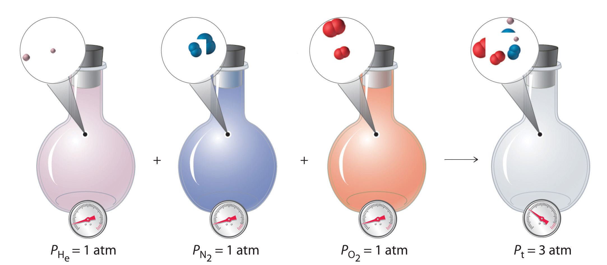The total pressure of a mixture of gases is the sum of the partial pressures of the individual gases.
For a mixture of two ideal gases, A and B, we can write an expression for the total pressure:
Equation 10.26
More generally, for a mixture of i components, the total pressure is given by
Equation 10.27
Equation 10.27 restates Equation 10.26 in a more general form and makes it explicitly clear that, at constant temperature and volume, the pressure exerted by a gas depends on only the total number of moles of gas present, whether the gas is a single chemical species or a mixture of dozens or even hundreds of gaseous species. For Equation 10.27 to be valid, the identity of the particles present cannot have an effect. Thus an ideal gas must be one whose properties are not affected by either the size of the particles or their intermolecular interactions because both will vary from one gas to another. The calculation of total and partial pressures for mixtures of gases is illustrated in Example 11.
For reasons that we will examine in Chapter 13 "Solutions", deep-sea divers must use special gas mixtures in their tanks, rather than compressed air, to avoid serious problems, most notably a condition called “the bends.” At depths of about 350 ft, divers are subject to a pressure of approximately 10 atm. A typical gas cylinder used for such depths contains 51.2 g of O2 and 326.4 g of He and has a volume of 10.0 L. What is the partial pressure of each gas at 20.00°C, and what is the total pressure in the cylinder at this temperature?
Given: masses of components, total volume, and temperature
Asked for: partial pressures and total pressure
Strategy:
A Calculate the number of moles of He and O2 present.
B Use the ideal gas law to calculate the partial pressure of each gas. Then add together the partial pressures to obtain the total pressure of the gaseous mixture.
Solution:
A The number of moles of He is
The number of moles of O2 is
B We can now use the ideal gas law to calculate the partial pressure of each:
The total pressure is the sum of the two partial pressures:
Exercise
A cylinder of compressed natural gas has a volume of 20.0 L and contains 1813 g of methane and 336 g of ethane. Calculate the partial pressure of each gas at 22.0°C and the total pressure in the cylinder.
Answer:
The composition of a gas mixture can be described by the mole fractions of the gases present. The mole fraction (X)The ratio of the number of moles of any component of a mixture to the total number of moles of all species present in the mixture. of any component of a mixture is the ratio of the number of moles of that component to the total number of moles of all the species present in the mixture (nt):
Equation 10.28
The mole fraction is a dimensionless quantity between 0 and 1. If XA = 1.0, then the sample is pure A, not a mixture. If XA = 0, then no A is present in the mixture. The sum of the mole fractions of all the components present must equal 1.
To see how mole fractions can help us understand the properties of gas mixtures, let’s evaluate the ratio of the pressure of a gas A to the total pressure of a gas mixture that contains A. We can use the ideal gas law to describe the pressures of both gas A and the mixture: PA = nART/V and Pt = ntRT/V. The ratio of the two is thus
Equation 10.29
Rearranging this equation gives
Equation 10.30
PA = XAPtThat is, the partial pressure of any gas in a mixture is the total pressure multiplied by the mole fraction of that gas. This conclusion is a direct result of the ideal gas law, which assumes that all gas particles behave ideally. Consequently, the pressure of a gas in a mixture depends on only the percentage of particles in the mixture that are of that type, not their specific physical or chemical properties. Recall from Chapter 3 "Chemical Reactions" (Table 3.2 "The Composition of Earth’s Atmosphere at Sea Level*") that by volume, Earth’s atmosphere is about 78% N2, 21% O2, and 0.9% Ar, with trace amounts of gases such as CO2, H2O, and others. This means that 78% of the particles present in the atmosphere are N2; hence the mole fraction of N2 is 78%/100% = 0.78. Similarly, the mole fractions of O2 and Ar are 0.21 and 0.009, respectively. Using Equation 10.30, we therefore know that the partial pressure of N2 is 0.78 atm (assuming an atmospheric pressure of exactly 760 mmHg) and, similarly, the partial pressures of O2 and Ar are 0.21 and 0.009 atm, respectively.
We have just calculated the partial pressures of the major gases in the air we inhale. Experiments that measure the composition of the air we exhale yield different results, however. The following table gives the measured pressures of the major gases in both inhaled and exhaled air. Calculate the mole fractions of the gases in exhaled air.
| Inhaled Air (mmHg) | Exhaled Air (mmHg) | |
|---|---|---|
| 597 | 568 | |
| 158 | 116 | |
| 0.3 | 28 | |
| 5 | 48 | |
| P Ar | 8 | 8 |
| P t | 767 | 767 |
Given: pressures of gases in inhaled and exhaled air
Asked for: mole fractions of gases in exhaled air
Strategy:
Calculate the mole fraction of each gas using Equation 10.30.
Solution:
The mole fraction of any gas A is given by
where PA is the partial pressure of A and Pt is the total pressure. In this case,
The following table gives the values of PA and XA for exhaled air.
| P A | X A | |
|---|---|---|
| P Ar | ||
Exercise
We saw in Example 10 that Venus is an inhospitable place, with a surface temperature of 560°C and a surface pressure of 90 atm. The atmosphere consists of about 96% CO2 and 3% N2, with trace amounts of other gases, including water, sulfur dioxide, and sulfuric acid. Calculate the partial pressures of CO2 and N2.
Answer:
The pressure exerted by each gas in a gas mixture (its partial pressure) is independent of the pressure exerted by all other gases present. Consequently, the total pressure exerted by a mixture of gases is the sum of the partial pressures of the components (Dalton’s law of partial pressures). The amount of gas present in a mixture may be described by its partial pressure or its mole fraction. The mole fraction of any component of a mixture is the ratio of the number of moles of that substance to the total number of moles of all substances present. In a mixture of gases, the partial pressure of each gas is the product of the total pressure and the mole fraction of that gas.
Mole fraction
Relationship between partial pressure and mole fraction
Equation 10.30: PA = XAPt
Dalton’s law of partial pressures makes one key assumption about the nature of the intermolecular interactions in a mixture of gases. What is it?
What is the relationship between the partial pressure of a gas and its mole fraction in a mixture?
What is the partial pressure of each gas if the following amounts of substances are placed in a 25.0 L container at 25°C? What is the total pressure of each mixture?
What is the partial pressure of each gas in the following 3.0 L mixtures at 37°C as well as the total pressure?
In a mixture of helium, oxygen, and methane in a 2.00 L container, the partial pressures of He and O2 are 13.6 kPa and 29.2 kPa, respectively, and the total pressure inside the container is 95.4 kPa. What is the partial pressure of methane? If the methane is ignited to initiate its combustion with oxygen and the system is then cooled to the original temperature of 30°C, what is the final pressure inside the container (in kilopascals)?
A 2.00 L flask originally contains 1.00 g of ethane (C2H6) and 32.0 g of oxygen at 21°C. During ignition, the ethane reacts completely with oxygen to produce CO2 and water vapor, and the temperature of the flask increases to 200°C. Determine the total pressure and the partial pressure of each gas before and after the reaction.
If a 20.0 L cylinder at 19°C is charged with 5.0 g each of sulfur dioxide and oxygen, what is the partial pressure of each gas? The sulfur dioxide is ignited in the oxygen to produce sulfur trioxide gas, and the mixture is allowed to cool to 19°C at constant pressure. What is the final volume of the cylinder? What is the partial pressure of each gas in the piston?
The highest point on the continent of Europe is Mt. Elbrus in Russia, with an elevation of 18,476 ft. The highest point on the continent of South America is Mt. Aconcagua in Argentina, with an elevation of 22,841 ft.
The following table shows the variation of atmospheric pressure with elevation. Use the data in the table to construct a plot of pressure versus elevation.
| Elevation (km) | Pressure in Summer (mmHg) | Pressure in Winter (mmHg) |
|---|---|---|
| 0.0 | 760.0 | 760.0 |
| 1.0 | 674.8 | 670.6 |
| 1.5 | 635.4 | 629.6 |
| 2.0 | 598.0 | 590.8 |
| 3.0 | 528.9 | 519.7 |
| 5.0 | 410.6 | 398.7 |
| 7.0 | 314.9 | 301.6 |
| 9.0 | 237.8 | 224.1 |
52.6 kPa, 66.2 kPa
With the ideal gas law, we can use the relationship between the amounts of gases (in moles) and their volumes (in liters) to calculate the stoichiometry of reactions involving gases, if the pressure and temperature are known. This is important for several reasons. Many reactions that are carried out in the laboratory involve the formation or reaction of a gas, so chemists must be able to quantitatively treat gaseous products and reactants as readily as they quantitatively treat solids or solutions. Furthermore, many, if not most, industrially important reactions are carried out in the gas phase for practical reasons. Gases mix readily, are easily heated or cooled, and can be transferred from one place to another in a manufacturing facility via simple pumps and plumbing. As a chemical engineer said to one of the authors, “Gases always go where you want them to, liquids sometimes do, but solids almost never do.”
Sulfuric acid, the industrial chemical produced in greatest quantity (almost 45 million tons per year in the United States alone), is prepared by the combustion of sulfur in air to give SO2, followed by the reaction of SO2 with O2 in the presence of a catalyst to give SO3, which reacts with water to give H2SO4. The overall chemical equation is as follows:
What volume of O2 (in liters) at 22°C and 745 mmHg pressure is required to produce 1.00 ton of H2SO4?
Given: reaction, temperature, pressure, and mass of one product
Asked for: volume of gaseous reactant
Strategy:
A Calculate the number of moles of H2SO4 in 1.00 ton. From the stoichiometric coefficients in the balanced chemical equation, calculate the number of moles of O2 required.
B Use the ideal gas law to determine the volume of O2 required under the given conditions. Be sure that all quantities are expressed in the appropriate units.
Solution:
We can see from the stoichiometry of the reaction that mol of O2 is required to produce 1 mol of H2SO4. This is a standard stoichiometry problem of the type presented in Chapter 3 "Chemical Reactions", except this problem asks for the volume of one of the reactants (O2) rather than its mass. We proceed exactly as in Chapter 3 "Chemical Reactions", using the strategy
mass of H2SO4 → moles H2SO4 → moles O2 → liters O2A We begin by calculating the number of moles of H2SO4 in 1.00 tn:
We next calculate the number of moles of O2 required:
B After converting all quantities to the appropriate units, we can use the ideal gas law to calculate the volume of O2:
The answer means that more than 300,000 L of oxygen gas are needed to produce 1 tn of sulfuric acid. These numbers may give you some appreciation for the magnitude of the engineering and plumbing problems faced in industrial chemistry.
Exercise
In Example 5, we saw that Charles used a balloon containing approximately 31,150 L of H2 for his initial flight in 1783. The hydrogen gas was produced by the reaction of metallic iron with dilute hydrochloric acid according to the following balanced chemical equation:
Fe(s) + 2 HCl(aq) → H2(g) + FeCl2(aq)How much iron (in kilograms) was needed to produce this volume of H2 if the temperature was 30°C and the atmospheric pressure was 745 mmHg?
Answer: 68.6 kg of Fe (approximately 150 lb)
Many of the advances made in chemistry during the 18th and 19th centuries were the result of careful experiments done to determine the identity and quantity of gases produced in chemical reactions. For example, in 1774, Joseph Priestley was able to isolate oxygen gas by the thermal decomposition of mercuric oxide (HgO). In the 1780s, Antoine Lavoisier conducted experiments that showed that combustion reactions, which require oxygen, produce what we now know to be carbon dioxide. Both sets of experiments required the scientists to collect and manipulate gases produced in chemical reactions, and both used a simple technique that is still used in chemical laboratories today: collecting a gas by the displacement of water. As shown in Figure 10.12 "An Apparatus for Collecting Gases by the Displacement of Water", the gas produced in a reaction can be channeled through a tube into inverted bottles filled with water. Because the gas is less dense than liquid water, it bubbles to the top of the bottle, displacing the water. Eventually, all the water is forced out and the bottle contains only gas. If a calibrated bottle is used (i.e., one with markings to indicate the volume of the gas) and the bottle is raised or lowered until the level of the water is the same both inside and outside, then the pressure within the bottle will exactly equal the atmospheric pressure measured separately with a barometer.
Figure 10.12 An Apparatus for Collecting Gases by the Displacement of Water
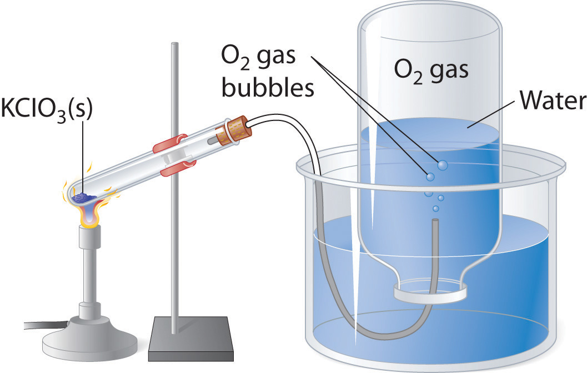When KClO3(s) is heated, O2 is produced according to the equation . The oxygen gas travels through the tube, bubbles up through the water, and is collected in a bottle as shown.
The only gases that cannot be collected using this technique are those that readily dissolve in water (e.g., NH3, H2S, and CO2) and those that react rapidly with water (such as F2 and NO2). Remember, however, when calculating the amount of gas formed in the reaction, the gas collected inside the bottle is not pure. Instead, it is a mixture of the product gas and water vapor. As we will discuss in Chapter 11 "Liquids", all liquids (including water) have a measurable amount of vapor in equilibrium with the liquid because molecules of the liquid are continuously escaping from the liquid’s surface, while other molecules from the vapor phase collide with the surface and return to the liquid. The vapor thus exerts a pressure above the liquid, which is called the liquid’s vapor pressure. In the case shown in Figure 10.12 "An Apparatus for Collecting Gases by the Displacement of Water", the bottle is therefore actually filled with a mixture of O2 and water vapor, and the total pressure is, by Dalton’s law of partial pressures, the sum of the pressures of the two components:
If we want to know the pressure of the gas generated in the reaction to calculate the amount of gas formed, we must first subtract the pressure due to water vapor from the total pressure. This is done by referring to tabulated values of the vapor pressure of water as a function of temperature (Table 10.4 "Vapor Pressure of Water at Various Temperatures"). As shown in Figure 10.13 "A Plot of the Vapor Pressure of Water versus Temperature", the vapor pressure of water increases rapidly with increasing temperature, and at the normal boiling point (100°C), the vapor pressure is exactly 1 atm. The methodology is illustrated in Example 14.
Table 10.4 Vapor Pressure of Water at Various Temperatures
| T (°C) | P (in mmHg) | T | P | T | P | T | P |
|---|---|---|---|---|---|---|---|
| 0 | 4.58 | 21 | 18.66 | 35 | 42.2 | 92 | 567.2 |
| 5 | 6.54 | 22 | 19.84 | 40 | 55.4 | 94 | 611.0 |
| 10 | 9.21 | 23 | 21.08 | 45 | 71.9 | 96 | 657.7 |
| 12 | 10.52 | 24 | 22.39 | 50 | 92.6 | 98 | 707.3 |
| 14 | 11.99 | 25 | 23.77 | 55 | 118.1 | 100 | 760.0 |
| 16 | 13.64 | 26 | 25.22 | 60 | 149.5 | 102 | 815.8 |
| 17 | 14.54 | 27 | 26.75 | 65 | 187.7 | 104 | 875.1 |
| 18 | 15.48 | 28 | 28.37 | 70 | 233.8 | 106 | 937.8 |
| 19 | 16.48 | 29 | 30.06 | 80 | 355.3 | 108 | 1004.2 |
| 20 | 17.54 | 30 | 31.84 | 90 | 525.9 | 110 | 1074.4 |
Figure 10.13 A Plot of the Vapor Pressure of Water versus Temperature
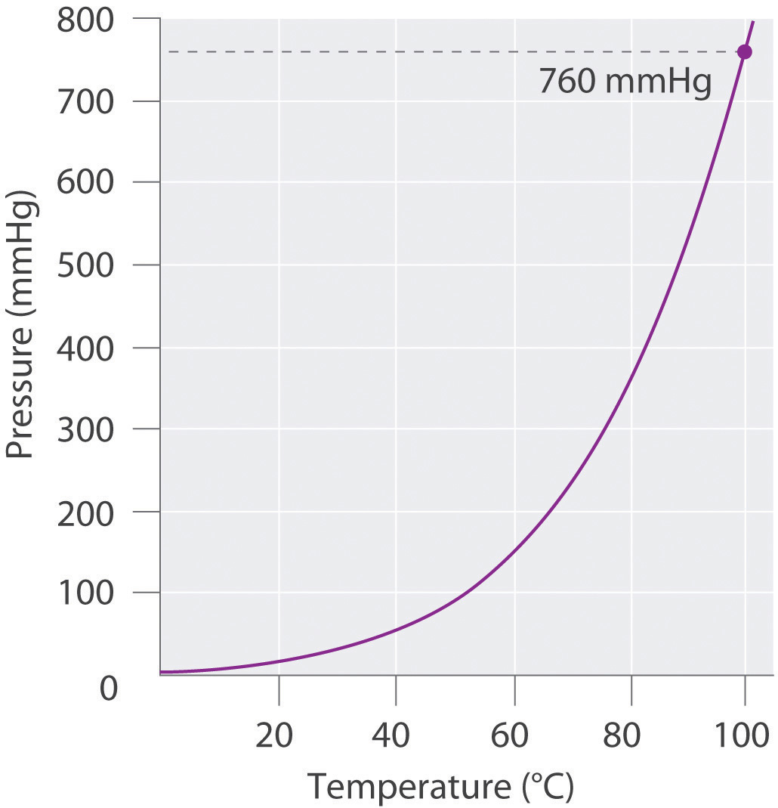The vapor pressure is very low (but not zero) at 0°C and reaches 1 atm = 760 mmHg at the normal boiling point, 100°C.
Sodium azide (NaN3) decomposes to form sodium metal and nitrogen gas according to the following balanced chemical equation:
This reaction is used to inflate the air bags that cushion passengers during automobile collisions. The reaction is initiated in air bags by an electrical impulse and results in the rapid evolution of gas. If the N2 gas that results from the decomposition of a 5.00 g sample of NaN3 could be collected by displacing water from an inverted flask, as in Figure 10.12 "An Apparatus for Collecting Gases by the Displacement of Water", what volume of gas would be produced at 22°C and 762 mmHg?
Given: reaction, mass of compound, temperature, and pressure
Asked for: volume of nitrogen gas produced
Strategy:
A Calculate the number of moles of N2 gas produced. From the data in Table 10.4 "Vapor Pressure of Water at Various Temperatures", determine the partial pressure of N2 gas in the flask.
B Use the ideal gas law to find the volume of N2 gas produced.
Solution:
A Because we know the mass of the reactant and the stoichiometry of the reaction, our first step is to calculate the number of moles of N2 gas produced:
The pressure given (762 mmHg) is the total pressure in the flask, which is the sum of the pressures due to the N2 gas and the water vapor present. Table 10.4 "Vapor Pressure of Water at Various Temperatures" tells us that the vapor pressure of water is 19.84 mmHg at 22°C (295 K), so the partial pressure of the N2 gas in the flask is only 762 − 19.84 = 742 mmHg = 0.976 atm.
B Solving the ideal gas law for V and substituting the other quantities (in the appropriate units), we get
Exercise
A 1.00 g sample of zinc metal is added to a solution of dilute hydrochloric acid. It dissolves to produce H2 gas according to the equation Zn(s) + 2 HCl(aq) → H2(g) + ZnCl2(aq). The resulting H2 gas is collected in a water-filled bottle at 30°C and an atmospheric pressure of 760 mmHg. What volume does it occupy?
Answer: 0.397 L
The relationship between the amounts of products and reactants in a chemical reaction can be expressed in units of moles or masses of pure substances, of volumes of solutions, or of volumes of gaseous substances. The ideal gas law can be used to calculate the volume of gaseous products or reactants as needed. In the laboratory, gases produced in a reaction are often collected by the displacement of water from filled vessels; the amount of gas can then be calculated from the volume of water displaced and the atmospheric pressure. A gas collected in such a way is not pure, however, but contains a significant amount of water vapor. The measured pressure must therefore be corrected for the vapor pressure of water, which depends strongly on the temperature.
Why are so many industrially important reactions carried out in the gas phase?
The volume of gas produced during a chemical reaction can be measured by collecting the gas in an inverted container filled with water. The gas forces water out of the container, and the volume of liquid displaced is a measure of the volume of gas. What additional information must be considered to determine the number of moles of gas produced? The volume of some gases cannot be measured using this method. What property of a gas precludes the use of this method?
Equal masses of two solid compounds (A and B) are placed in separate sealed flasks filled with air at 1 atm and heated to 50°C for 10 hours. After cooling to room temperature, the pressure in the flask containing A was 1.5 atm. In contrast, the pressure in the flask containing B was 0.87 atm. Suggest an explanation for these observations. Would the masses of samples A and B still be equal after the experiment? Why or why not?
Balance each chemical equation and then determine the volume of the indicated reactant at STP that is required for complete reaction. Assuming complete reaction, what is the volume of the products?
During the smelting of iron, carbon reacts with oxygen to produce carbon monoxide, which then reacts with iron(III) oxide to produce iron metal and carbon dioxide. If 1.82 L of CO2 at STP is produced,
Complete decomposition of a sample of potassium chlorate produced 1.34 g of potassium chloride and oxygen gas.
The combustion of a 100.0 mg sample of an herbicide in excess oxygen produced 83.16 mL of CO2 and 72.9 mL of H2O vapor at STP. A separate analysis showed that the sample contained 16.44 mg of chlorine. If the sample is known to contain only C, H, Cl, and N, determine the percent composition and the empirical formula of the herbicide.
The combustion of a 300.0 mg sample of an antidepressant in excess oxygen produced 326 mL of CO2 and 164 mL of H2O vapor at STP. A separate analysis showed that the sample contained 23.28% oxygen. If the sample is known to contain only C, H, O, and N, determine the percent composition and the empirical formula of the antidepressant.
Percent composition: 58.3% C, 4.93% H, 23.28% O, and 13.5% N; empirical formula: C10H10O3N2
The laws that describe the behavior of gases were well established long before anyone had developed a coherent model of the properties of gases. In this section, we introduce a theory that describes why gases behave the way they do. The theory we introduce can also be used to derive laws such as the ideal gas law from fundamental principles and the properties of individual particles.
The kinetic molecular theory of gasesA theory that describes, on the molecular level, why ideal gases behave the way they do. explains the laws that describe the behavior of gases. Developed during the mid-19th century by several physicists, including the Austrian Ludwig Boltzmann (1844–1906), the German Rudolf Clausius (1822–1888), and the Englishman James Clerk Maxwell (1831–1879), who is also known for his contributions to electricity and magnetism, this theory is based on the properties of individual particles as defined for an ideal gas and the fundamental concepts of physics. Thus the kinetic molecular theory of gases provides a molecular explanation for observations that led to the development of the ideal gas law. The kinetic molecular theory of gases is based on the following five postulates:
Although the molecules of real gases have nonzero volumes and exert both attractive and repulsive forces on one another, for the moment we will focus on how the kinetic molecular theory of gases relates to the properties of gases we have been discussing. In Section 10.8 "The Behavior of Real Gases", we explain how this theory must be modified to account for the behavior of real gases.
Postulates 1 and 4 state that gas molecules are in constant motion and collide frequently with the walls of their containers. The collision of molecules with their container walls results in a force exerted by the gas on the walls, just as a bowling ball exerts a force on the pins it strikes. Anything that increases the frequency with which the molecules strike the walls or increases the momentum of the gas molecules (i.e., how hard they hit the walls) increases the pressure; anything that decreases that frequency or the momentum of the molecules decreases the pressure.
Because volumes and intermolecular interactions are negligible, postulates 2 and 3 state that all gaseous particles behave identically, regardless of the chemical nature of their component molecules. This is the essence of the ideal gas law, which treats all gases as collections of particles that are identical in all respects except mass. Postulate 2 also explains why it is relatively easy to compress a gas; you simply decrease the distance between the gas molecules.
Postulate 5 provides a molecular explanation for the temperature of a gas. Recall from Chapter 5 "Energy Changes in Chemical Reactions" that the kinetic energy of an object is given by where m is the mass of the object and v is its velocity, or speed. Postulate 5 refers to the average kinetic energy of the molecules of a gas, which can be represented as and states that at a given temperature, all gases have the same value of The average kinetic energy of the molecules of a gas is therefore
Equation 10.31
where
is the average of the squares of the speeds of the particles. For n particles,
Equation 10.32
The square root of is the root mean square (rms) speed(vrms)The speed of a gas particle that has average kinetic energy.:
Equation 10.33
Compare this with the formula used to calculate the average speed:
Equation 10.34
The rms speed and the average speed do not differ greatly (typically by less than 10%). The distinction is important, however, because the rms speed is the speed of a gas particle that has average kinetic energy. Particles of different gases at the same temperature have the same average kinetic energy, not the same average speed. In contrast, the most probable speed (vp) is the speed at which the greatest number of particles is moving. If the average kinetic energy of the particles of a gas increases linearly with increasing temperature, then Equation 10.33 tells us that the rms speed must also increase with temperature because the mass of the particles is constant. At higher temperatures, therefore, the molecules of a gas move more rapidly than at lower temperatures, and vp increases.
At a given temperature, all gaseous particles have the same average kinetic energy but not the same average speed.
The speeds of eight particles were found to be 1.0, 4.0, 4.0, 6.0, 6.0, 6.0, 8.0, and 10.0 m/s. Calculate their average speed root mean square speed (vrms), and most probable speed (vp).
Given: particle speeds
Asked for: average speed root mean square speed (vrms), and most probable speed (vp)
Strategy:
Use Equation 10.34 to calculate the average speed and Equation 10.33 to calculate the rms speed. Find the most probable speed by determining the speed at which the greatest number of particles is moving.
Solution:
The average speed is the sum of the speeds divided by the number of particles:
The rms speed is the square root of the sum of the squared speeds divided by the number of particles:
The most probable speed is the speed at which the greatest number of particles is moving. Of the eight particles, three have speeds of 6.0 m/s, two have speeds of 4.0 m/s, and the other three particles have different speeds. Hence vp = 6.0 m/s. The vrms of the particles, which is related to the average kinetic energy, is greater than their average speed.
Exercise
Ten particles were found to have speeds of 0.1, 1.0, 2.0, 3.0, 3.0, 3.0, 4.0, 4.0, 5.0, and 6.0 m/s. Calculate their average speed root mean square speed (vrms), and most probable speed (vp).
Answer:
At any given time, what fraction of the molecules in a particular sample has a given speed? Some of the molecules will be moving more slowly than average, and some will be moving faster than average, but how many in each situation? Answers to questions such as these can have a substantial effect on the amount of product formed during a chemical reaction, as you will learn in Chapter 14 "Chemical Kinetics". This problem was solved mathematically by Maxwell in 1866; he used statistical analysis to obtain an equation that describes the distribution of molecular speeds at a given temperature. Typical curves showing the distributions of speeds of molecules at several temperatures are displayed in Figure 10.14 "The Distributions of Molecular Speeds for a Sample of Nitrogen Gas at Various Temperatures". Increasing the temperature has two effects. First, the peak of the curve moves to the right because the most probable speed increases. Second, the curve becomes broader because of the increased spread of the speeds. Thus increased temperature increases the value of the most probable speed but decreases the relative number of molecules that have that speed. Although the mathematics behind curves such as those in Figure 10.14 "The Distributions of Molecular Speeds for a Sample of Nitrogen Gas at Various Temperatures" were first worked out by Maxwell, the curves are almost universally referred to as Boltzmann distributionsA curve that shows the distribution of molecular speeds at a given temperature., after one of the other major figures responsible for the kinetic molecular theory of gases.
Figure 10.14 The Distributions of Molecular Speeds for a Sample of Nitrogen Gas at Various Temperatures
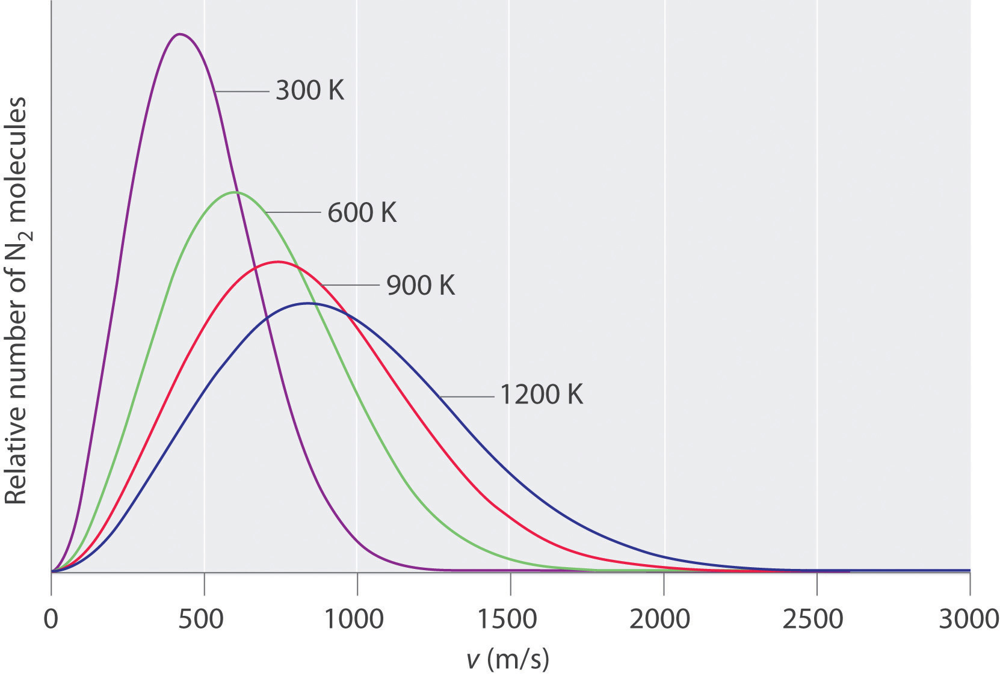Increasing the temperature increases both the most probable speed (given at the peak of the curve) and the width of the curve.
We now describe how the kinetic molecular theory of gases explains some of the important relationships we have discussed previously.
At constant temperature, the kinetic energy of the molecules of a gas and hence the rms speed remain unchanged. If a given gas sample is allowed to occupy a larger volume, then the speed of the molecules does not change, but the density of the gas (number of particles per unit volume) decreases, and the average distance between the molecules increases. Hence the molecules must, on average, travel farther between collisions. They therefore collide with one another and with the walls of their containers less often, leading to a decrease in pressure. Conversely, increasing the pressure forces the molecules closer together and increases the density, until the collective impact of the collisions of the molecules with the container walls just balances the applied pressure.
Raising the temperature of a gas increases the average kinetic energy and therefore the rms speed (and the average speed) of the gas molecules. Hence as the temperature increases, the molecules collide with the walls of their containers more frequently and with greater force. This increases the pressure, unless the volume increases to reduce the pressure, as we have just seen. Thus an increase in temperature must be offset by an increase in volume for the net impact (pressure) of the gas molecules on the container walls to remain unchanged.
Postulate 3 of the kinetic molecular theory of gases states that gas molecules exert no attractive or repulsive forces on one another. If the gaseous molecules do not interact, then the presence of one gas in a gas mixture will have no effect on the pressure exerted by another, and Dalton’s law of partial pressures holds.
The temperature of a 4.75 L container of N2 gas is increased from 0°C to 117°C. What is the qualitative effect of this change on the
Given: temperatures and volume
Asked for: effect of increase in temperature
Strategy:
Use the relationships among pressure, volume, and temperature to predict the qualitative effect of an increase in the temperature of the gas.
Solution:
Exercise
A sample of helium gas is confined in a cylinder with a gas-tight sliding piston. The initial volume is 1.34 L, and the temperature is 22°C. The piston is moved to allow the gas to expand to 2.12 L at constant temperature. What is the qualitative effect of this change on the
Answer: a. no change; b. no change; c. no change; d. no change; e. decreases; f. decreases; g. decreases
As you have learned, the molecules of a gas are not stationary but in constant motion. If someone opens a bottle of perfume in the next room, for example, you are likely to be aware of it soon. Your sense of smell relies on molecules of the aromatic substance coming into contact with specialized olfactory cells in your nasal passages, which contain specific receptors (protein molecules) that recognize the substance. How do the molecules responsible for the aroma get from the perfume bottle to your nose? You might think that they are blown by drafts, but, in fact, molecules can move from one place to another even in a draft-free environment. Figure 10.15 "The Diffusion of Gaseous Molecules" shows white fumes of solid ammonium chloride (NH4Cl) forming when containers of aqueous ammonia and HCl are placed near each other, even with no draft to stir the air. This phenomenon suggests that NH3 and HCl molecules (as well as the more complex organic molecules responsible for the aromas of pizza and perfumes) move without assistance.
Figure 10.15 The Diffusion of Gaseous Molecules

When open containers of aqueous NH3 and HCl are placed near each other in a draft-free environment, molecules of the two substances diffuse, collide, and react to produce white fumes of solid ammonium chloride (NH4Cl).
DiffusionThe gradual mixing of gases due to the motion of their component particles even in the absence of mechanical agitation such as stirring. The result is a gas mixture with a uniform composition. is the gradual mixing of gases due to the motion of their component particles even in the absence of mechanical agitation such as stirring. The result is a gas mixture with uniform composition. As we shall see in Chapter 11 "Liquids", Chapter 12 "Solids", and Chapter 13 "Solutions", diffusion is also a property of the particles in liquids and liquid solutions and, to a lesser extent, of solids and solid solutions. We can describe the phenomenon shown in Figure 10.15 "The Diffusion of Gaseous Molecules" by saying that the molecules of HCl and NH3 are able to diffuse away from their containers, and that NH4Cl is formed where the two gases come into contact. Similarly, we say that a perfume or an aroma diffuses throughout a room or a house. The related process, effusionThe escape of a gas through a small (usually microscopic) opening into an evacuated space., is the escape of gaseous molecules through a small (usually microscopic) hole, such as a hole in a balloon, into an evacuated space.
The phenomenon of effusion had been known for thousands of years, but it was not until the early 19th century that quantitative experiments related the rate of effusion to molecular properties. The rate of effusion of a gaseous substance is inversely proportional to the square root of its molar mass. This relationship, is referred to as Graham’s lawA law that states that the rate of effusion of a gaseous substance is inversely proportional to the square root of its molar mass., after the Scottish chemist Thomas Graham (1805–1869). The ratio of the effusion rates of two gases is the square root of the inverse ratio of their molar masses. If r is the effusion rate and M is the molar mass, then
Equation 10.35
Although diffusion and effusion are different phenomena, the rate of diffusion is closely approximated using Equation 10.35; that is, if M1 < M2, then gas #1 will diffuse more rapidly than gas #2. This point is illustrated by the experiment shown in Figure 10.16 "A Simple Experiment to Measure the Relative Rates of the Diffusion of Two Gases", which is a more quantitative version of the case shown in Figure 10.15 "The Diffusion of Gaseous Molecules". The reaction is the same [NH3(aq) + HCl(aq) → NH4Cl(g)], but in this experiment, two cotton balls containing aqueous ammonia and HCl are placed along a meter stick in a draft-free environment, and the position at which the initial NH4Cl fumes appear is noted. The white cloud forms much nearer the HCl-containing ball than the NH3-containing ball. Because ammonia (M = 17.0 g/mol) diffuses much faster than HCl (M = 36.5 g/mol), the NH4Cl fumes form closer to HCl because the HCl molecules travel a shorter distance. The ratio of the distances traveled by NH3 and HCl in Figure 10.16 "A Simple Experiment to Measure the Relative Rates of the Diffusion of Two Gases" is about 1.7, in reasonable agreement with the ratio of 1.47 predicted by their molar masses [(36.5/17.0)1/2 = 1.47].
Figure 10.16 A Simple Experiment to Measure the Relative Rates of the Diffusion of Two Gases

Cotton balls containing aqueous NH3 (left) and HCl (right) are placed a measured distance apart in a draft-free environment, and the position at which white fumes of NH4Cl first appear is noted. The puff of white NH4Cl forms much closer to the HCl-containing ball than to the NH3-containing ball. The left edge of the white puff marks where the reaction was first observed. The position of the white puff (18.8 − 3.3 = 15.5 cm from the NH3, 28.0 − 18.8 = 9.2 cm from the HCl, giving a ratio of distances of 15.5/9.2 = 1.7) is approximately the location predicted by Graham’s law based on the square root of the inverse ratio of the molar masses of the reactants (1.47).
Heavy molecules effuse through a porous material more slowly than light molecules, as illustrated schematically in Figure 10.17 "The Relative Rates of Effusion of Two Gases with Different Masses" for ethylene oxide and helium. Helium (M = 4.00 g/mol) effuses much more rapidly than ethylene oxide (M = 44.0 g/mol). Because helium is less dense than air, helium-filled balloons “float” at the end of a tethering string. Unfortunately, rubber balloons filled with helium soon lose their buoyancy along with much of their volume. In contrast, rubber balloons filled with air tend to retain their shape and volume for a much longer time. Because helium has a molar mass of 4.00 g/mol, whereas air has an average molar mass of about 29 g/mol, pure helium effuses through the microscopic pores in the rubber balloon times faster than air. For this reason, high-quality helium-filled balloons are usually made of Mylar, a dense, strong, opaque material with a high molecular mass that forms films that have many fewer pores than rubber. Mylar balloons can retain their helium for days.
Figure 10.17 The Relative Rates of Effusion of Two Gases with Different Masses
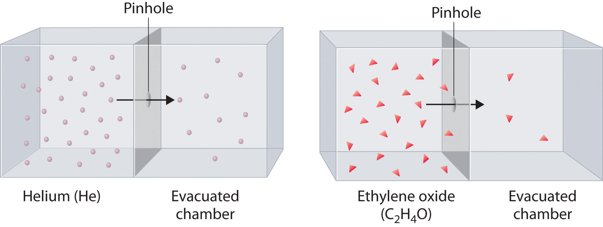The lighter He atoms (M = 4.00 g/mol) effuse through the small hole more rapidly than the heavier ethylene oxide (C2H4O) molecules (M = 44.0 g/mol), as predicted by Graham’s law.
At a given temperature, heavier molecules move more slowly than lighter molecules.
During World War II, scientists working on the first atomic bomb were faced with the challenge of finding a way to obtain large amounts of 235U. Naturally occurring uranium is only 0.720% 235U, whereas most of the rest (99.275%) is 238U, which is not fissionable (i.e., it will not break apart to release nuclear energy) and also actually poisons the fission process. Because both isotopes of uranium have the same reactivity, they cannot be separated chemically. Instead, a process of gaseous effusion was developed using the volatile compound UF6 (boiling point = 56°C).
Given: isotopic content of naturally occurring uranium and atomic masses of 235U and 238U
Asked for: ratio of rates of effusion and number of effusion steps needed to obtain 99.0% pure 235UF6
Strategy:
A Calculate the molar masses of 235UF6 and 238UF6, and then use Graham’s law to determine the ratio of the effusion rates. Use this value to determine the isotopic content of 235UF6 after a single effusion step.
B Divide the final purity by the initial purity to obtain a value for the number of separation steps needed to achieve the desired purity. Use a logarithmic expression to compute the number of separation steps required.
Solution:
A The first step is to calculate the molar mass of UF6 containing 235U and 238U. Luckily for the success of the separation method, fluorine consists of a single isotope of atomic mass 18.998. The molar mass of 235UF6 is
234.04 + (6)(18.998) = 349.03 g/molThe molar mass of 238UF6 is
238.05 + (6)(18.998) = 352.04 g/molThe difference is only 3.01 g/mol (less than 1%). The ratio of the effusion rates can be calculated from Graham’s law using Equation 10.35:
Thus passing UF6 containing a mixture of the two isotopes through a single porous barrier gives an enrichment of 1.0043, so after one step the isotopic content is (0.720%)(1.0043) = 0.723% 235UF6.
B To obtain 99.0% pure 235UF6 requires many steps. We can set up an equation that relates the initial and final purity to the number of times the separation process is repeated:
final purity = (initial purity)(separation)nIn this case, 0.990 = (0.00720)(1.0043)n, which can be rearranged to give
Taking the logarithm of both sides gives
Thus at least a thousand effusion steps are necessary to obtain highly enriched 235U. Figure 10.18 "A Portion of a Plant for Separating Uranium Isotopes by Effusion of UF" shows a small part of a system that is used to prepare enriched uranium on a large scale.
Exercise
Helium consists of two isotopes: 3He (natural abundance = 0.000134%) and 4He (natural abundance = 99.999866%). Their atomic masses are 3.01603 and 4.00260, respectively. Helium-3 has unique physical properties and is used in the study of ultralow temperatures. It is separated from the more abundant 4He by a process of gaseous effusion.
Answer: a. ratio of effusion rates = 1.15200; one step gives 0.000154% 3He; b. 96 steps
Figure 10.18 A Portion of a Plant for Separating Uranium Isotopes by Effusion of UF6
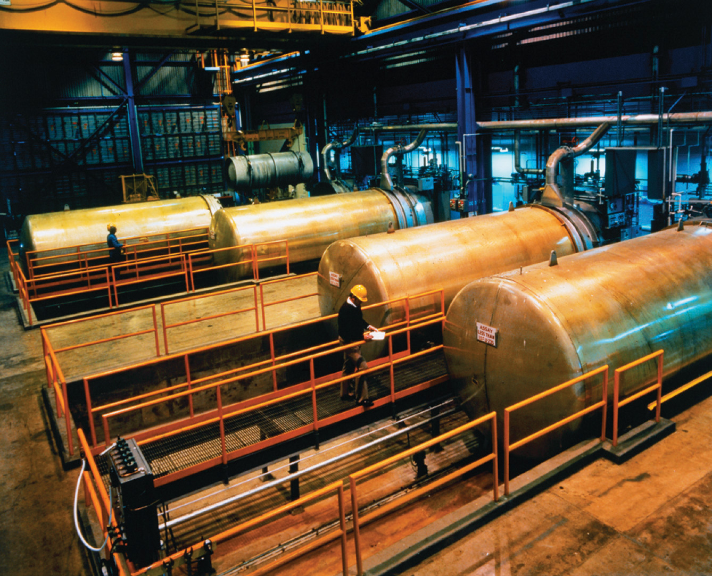The large cylindrical objects (note the human for scale) are so-called diffuser (actually effuser) units, in which gaseous UF6 is pumped through a porous barrier to partially separate the isotopes. The UF6 must be passed through multiple units to become substantially enriched in 235U.
Graham’s law is an empirical relationship that states that the ratio of the rates of diffusion or effusion of two gases is the square root of the inverse ratio of their molar masses. The relationship is based on the postulate that all gases at the same temperature have the same average kinetic energy. We can write the expression for the average kinetic energy of two gases with different molar masses:
Equation 10.36
Multiplying both sides by 2 and rearranging give
Equation 10.37
Taking the square root of both sides gives
Equation 10.38
Thus the rate at which a molecule, or a mole of molecules, diffuses or effuses is directly related to the speed at which it moves. Equation 10.38 shows that Graham’s law is a direct consequence of the fact that gaseous molecules at the same temperature have the same average kinetic energy.
Typically, gaseous molecules have a speed of hundreds of meters per second (hundreds of miles per hour). The effect of molar mass on these speeds is dramatic, as illustrated in Figure 10.19 "The Wide Variation in Molecular Speeds Observed at 298 K for Gases with Different Molar Masses" for some common gases. Because all gases have the same average kinetic energy, according to the Boltzmann distribution, molecules with lower masses, such as hydrogen and helium, have a wider distribution of speeds. The postulates of the kinetic molecular theory of gases lead to the following equation, which directly relates molar mass, temperature, and rms speed:
Equation 10.39
In this equation, vrms has units of meters per second; consequently, the units of molar mass M are kilograms per mole, temperature T is expressed in kelvins, and the ideal gas constant R has the value 8.3145 J/(K·mol).
Figure 10.19 The Wide Variation in Molecular Speeds Observed at 298 K for Gases with Different Molar Masses
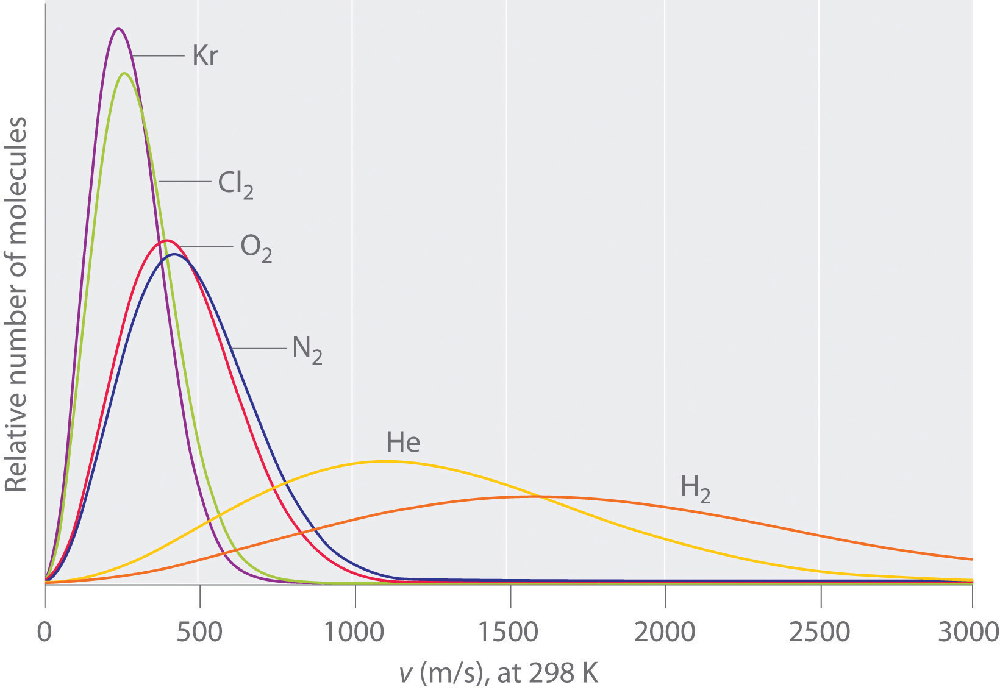The lightest gases have a wider distribution of speeds and the highest average speeds.
Molecules with lower masses have a wider distribution of speeds and a higher average speed.
Gas molecules do not diffuse nearly as rapidly as their very high speeds might suggest. If molecules actually moved through a room at hundreds of miles per hour, we would detect odors faster than we hear sound. Instead, it can take several minutes for us to detect an aroma because molecules are traveling in a medium with other gas molecules. Because gas molecules collide as often as 1010 times per second, changing direction and speed with each collision, they do not diffuse across a room in a straight line, as illustrated schematically in Figure 10.20 "The Path of a Single Particle in a Gas Sample". The average distance traveled by a molecule between collisions is the mean free pathThe average distance traveled by a molecule between collisions.. The denser the gas, the shorter the mean free path; conversely, as density decreases, the mean free path becomes longer because collisions occur less frequently. At 1 atm pressure and 25°C, for example, an oxygen or nitrogen molecule in the atmosphere travels only about 6.0 × 10−8 m (60 nm) between collisions. In the upper atmosphere at about 100 km altitude, where gas density is much lower, the mean free path is about 10 cm; in space between galaxies, it can be as long as 1 × 1010 m (about 6 million miles).
Figure 10.20 The Path of a Single Particle in a Gas Sample

The frequent changes in direction are the result of collisions with other gas molecules and with the walls of the container.
The denser the gas, the shorter the mean free path.
Calculate the rms speed of a sample of cis-2-butene (C4H8) at 20°C.
Given: compound and temperature
Asked for: rms speed
Strategy:
Calculate the molar mass of cis-2-butene. Be certain that all quantities are expressed in the appropriate units and then use Equation 10.39 to calculate the rms speed of the gas.
Solution:
To use Equation 10.39, we need to calculate the molar mass of cis-2-butene and make sure that each quantity is expressed in the appropriate units. Butene is C4H8, so its molar mass is 56.11 g/mol. Thus
or approximately 810 mi/h.
Exercise
Calculate the rms speed of a sample of radon gas at 23°C.
Answer: 1.82 × 102 m/s (about 410 mi/h)
The kinetic molecular theory of gases demonstrates how a successful theory can explain previously observed empirical relationships (laws) in an intuitively satisfying way. Unfortunately, the actual gases that we encounter are not “ideal,” although their behavior usually approximates that of an ideal gas. In Section 10.8 "The Behavior of Real Gases", we explore how the behavior of real gases differs from that of ideal gases.
The behavior of ideal gases is explained by the kinetic molecular theory of gases. Molecular motion, which leads to collisions between molecules and the container walls, explains pressure, and the large intermolecular distances in gases explain their high compressibility. Although all gases have the same average kinetic energy at a given temperature, they do not all possess the same root mean square (rms) speed (vrms). The actual values of speed and kinetic energy are not the same for all particles of a gas but are given by a Boltzmann distribution, in which some molecules have higher or lower speeds (and kinetic energies) than average. Diffusion is the gradual mixing of gases to form a sample of uniform composition even in the absence of mechanical agitation. In contrast, effusion is the escape of a gas from a container through a tiny opening into an evacuated space. The rate of effusion of a gas is inversely proportional to the square root of its molar mass (Graham’s law), a relationship that closely approximates the rate of diffusion. As a result, light gases tend to diffuse and effuse much more rapidly than heavier gases. The mean free path of a molecule is the average distance it travels between collisions.
Average kinetic energy
Root mean square speed
Graham’s law for diffusion and effusion
Kinetic molecular theory of gases
Which of the following processes represents effusion, and which represents diffusion?
Which postulate of the kinetic molecular theory of gases most readily explains the observation that a helium-filled balloon is round?
Why is it relatively easy to compress a gas? How does the compressibility of a gas compare with that of a liquid? A solid? Why? Which of the postulates of the kinetic molecular theory of gases most readily explains these observations?
What happens to the average kinetic energy of a gas if the rms speed of its particles increases by a factor of 2? How is the rms speed different from the average speed?
Which gas—radon or helium—has a higher average kinetic energy at 100°C? Which has a higher average speed? Why? Which postulate of the kinetic molecular theory of gases most readily supports your answer?
What is the relationship between the average speed of a gas particle and the temperature of the gas? What happens to the distribution of molecular speeds if the temperature of a gas is increased? Decreased?
Qualitatively explain the relationship between the number of collisions of gas particles with the walls of a container and the pressure of a gas. How does increasing the temperature affect the number of collisions?
What happens to the average kinetic energy of a gas at constant temperature if the
What happens to the density of a gas at constant temperature if the
Use the kinetic molecular theory of gases to describe how a decrease in volume produces an increase in pressure at constant temperature. Similarly, explain how a decrease in temperature leads to a decrease in volume at constant pressure.
Graham’s law is valid only if the two gases are at the same temperature. Why?
If we lived in a helium atmosphere rather than in air, would we detect odors more or less rapidly than we do now? Explain your reasoning. Would we detect odors more or less rapidly at sea level or at high altitude? Why?
At a given temperature, what is the ratio of the rms speed of the atoms of Ar gas to the rms speed of molecules of H2 gas?
At a given temperature, what is the ratio of the rms speed of molecules of CO gas to the rms speed of molecules of H2S gas?
What is the ratio of the rms speeds of argon and oxygen at any temperature? Which diffuses more rapidly?
What is the ratio of the rms speeds of Kr and NO at any temperature? Which diffuses more rapidly?
Deuterium (D) and tritium (T) are heavy isotopes of hydrogen. Tritium has an atomic mass of 3.016 amu and has a natural abundance of 0.000138%. The effusion of hydrogen gas (containing a mixture of H2, HD, and HT molecules) through a porous membrane can be used to obtain samples of hydrogen that are enriched in tritium. How many membrane passes are necessary to give a sample of hydrogen gas in which 1% of the hydrogen molecules are HT?
Samples of HBr gas and NH3 gas are placed at opposite ends of a 1 m tube. If the two gases are allowed to diffuse through the tube toward one another, at what distance from each end of the tube will the gases meet and form solid NH4Br?
At any temperature, the rms speed of hydrogen is 4.45 times that of argon.
The postulates of the kinetic molecular theory of gases ignore both the volume occupied by the molecules of a gas and all interactions between molecules, whether attractive or repulsive. In reality, however, all gases have nonzero molecular volumes. Furthermore, the molecules of real gases interact with one another in ways that depend on the structure of the molecules and therefore differ for each gaseous substance. In this section, we consider the properties of real gases and how and why they differ from the predictions of the ideal gas law. We also examine liquefaction, a key property of real gases that is not predicted by the kinetic molecular theory of gases.
For an ideal gas, a plot of PV/nRT versus P gives a horizontal line with an intercept of 1 on the PV/nRT axis. Real gases, however, show significant deviations from the behavior expected for an ideal gas, particularly at high pressures (part (a) in Figure 10.21 "Real Gases Do Not Obey the Ideal Gas Law, Especially at High Pressures"). Only at relatively low pressures (less than 1 atm) do real gases approximate ideal gas behavior (part (b) in Figure 10.21 "Real Gases Do Not Obey the Ideal Gas Law, Especially at High Pressures"). Real gases also approach ideal gas behavior more closely at higher temperatures, as shown in Figure 10.22 "The Effect of Temperature on the Behavior of Real Gases" for N2. Why do real gases behave so differently from ideal gases at high pressures and low temperatures? Under these conditions, the two basic assumptions behind the ideal gas law—namely, that gas molecules have negligible volume and that intermolecular interactions are negligible—are no longer valid.
Figure 10.21 Real Gases Do Not Obey the Ideal Gas Law, Especially at High Pressures
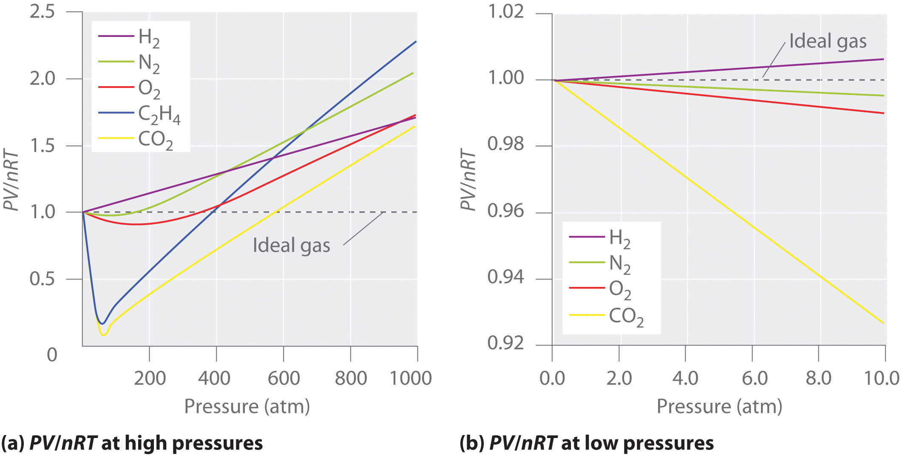(a) In these plots of PV/nRT versus P at 273 K for several common gases, there are large negative deviations observed for C2H4 and CO2 because they liquefy at relatively low pressures. (b) These plots illustrate the relatively good agreement between experimental data for real gases and the ideal gas law at low pressures.
Figure 10.22 The Effect of Temperature on the Behavior of Real Gases
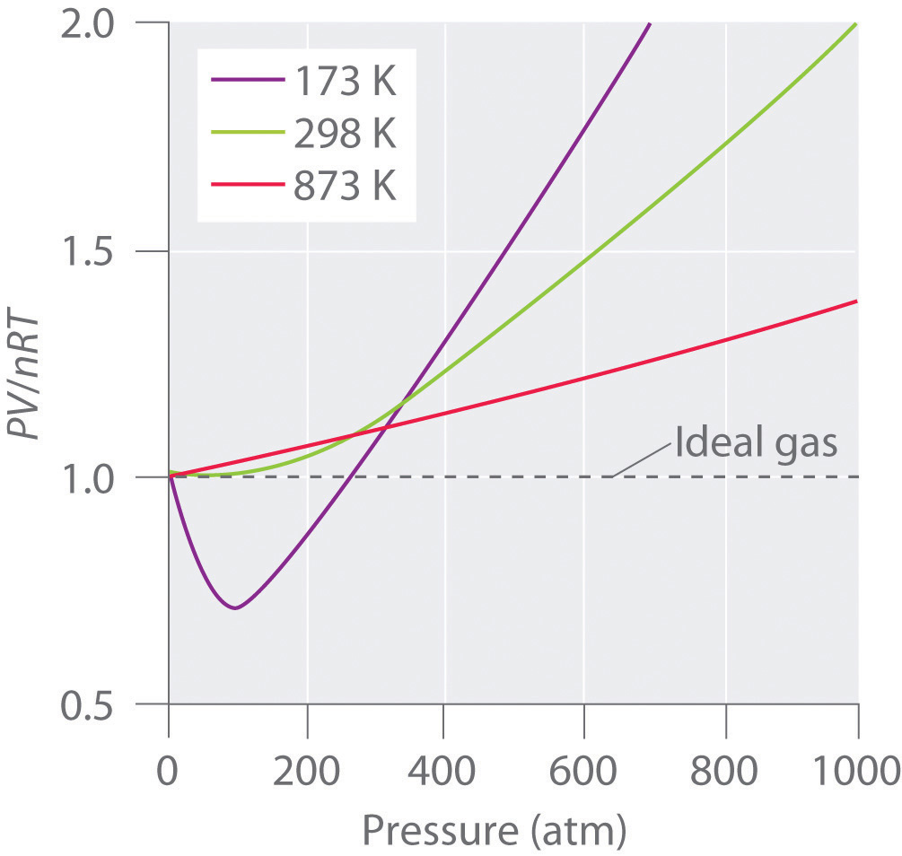A plot of PV/nRT versus P for nitrogen gas at three temperatures shows that the approximation to ideal gas behavior becomes better as the temperature increases.
Because the molecules of an ideal gas are assumed to have zero volume, the volume available to them for motion is always the same as the volume of the container. In contrast, the molecules of a real gas have small but measurable volumes. At low pressures, the gaseous molecules are relatively far apart, but as the pressure of the gas increases, the intermolecular distances become smaller and smaller (Figure 10.23 "The Effect of Nonzero Volume of Gas Particles on the Behavior of Gases at Low and High Pressures"). As a result, the volume occupied by the molecules becomes significant compared with the volume of the container. Consequently, the total volume occupied by the gas is greater than the volume predicted by the ideal gas law. Thus at very high pressures, the experimentally measured value of PV/nRT is greater than the value predicted by the ideal gas law.
Figure 10.23 The Effect of Nonzero Volume of Gas Particles on the Behavior of Gases at Low and High Pressures
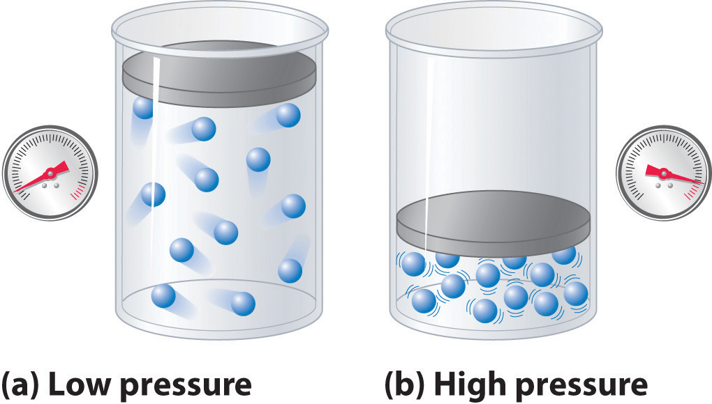(a) At low pressures, the volume occupied by the molecules themselves is small compared with the volume of the container. (b) At high pressures, the molecules occupy a large portion of the volume of the container, resulting in significantly decreased space in which the molecules can move.
Moreover, all molecules are attracted to one another by a combination of forces. These forces become particularly important for gases at low temperatures and high pressures, where intermolecular distances are shorter. Attractions between molecules reduce the number of collisions with the container wall, an effect that becomes more pronounced as the number of attractive interactions increases. Because the average distance between molecules decreases, the pressure exerted by the gas on the container wall decreases, and the observed pressure is less than expected (Figure 10.24 "The Effect of Intermolecular Attractive Forces on the Pressure a Gas Exerts on the Container Walls"). Thus as shown in Figure 10.22 "The Effect of Temperature on the Behavior of Real Gases", at low temperatures, the ratio of PV/nRT is lower than predicted for an ideal gas, an effect that becomes particularly evident for complex gases and for simple gases at low temperatures. At very high pressures, the effect of nonzero molecular volume predominates. The competition between these effects is responsible for the minimum observed in the PV/nRT versus P plot for many gases.
Nonzero molecular volume makes the actual volume greater than predicted at high pressures; intermolecular attractions make the pressure less than predicted.
At high temperatures, the molecules have sufficient kinetic energy to overcome intermolecular attractive forces, and the effects of nonzero molecular volume predominate. Conversely, as the temperature is lowered, the kinetic energy of the gas molecules decreases. Eventually, a point is reached where the molecules can no longer overcome the intermolecular attractive forces, and the gas liquefies (condenses to a liquid).
The Dutch physicist Johannes van der Waals (1837–1923; Nobel Prize in Physics, 1910) modified the ideal gas law to describe the behavior of real gases by explicitly including the effects of molecular size and intermolecular forces. In his description of gas behavior, the so-called van der Waals equationA modification of the ideal gas law designed to describe the behavior of real gases by explicitly including the effects of molecular volume and intermolecular forces.,
Equation 10.40
a and b are empirical constants that are different for each gas. The values of a and b are listed in Table 10.5 "van der Waals Constants for Some Common Gases" for several common gases. The pressure term—P + (an2/V2)—corrects for intermolecular attractive forces that tend to reduce the pressure from that predicted by the ideal gas law. Here, n2/V2 represents the concentration of the gas (n/V) squared because it takes two particles to engage in the pairwise intermolecular interactions of the type shown in Figure 10.24 "The Effect of Intermolecular Attractive Forces on the Pressure a Gas Exerts on the Container Walls". The volume term—V − nb—corrects for the volume occupied by the gaseous molecules.
Table 10.5 van der Waals Constants for Some Common Gases
| Gas | a (L2·atm)/mol2) | b (L/mol) |
|---|---|---|
| He | 0.03410 | 0.0238 |
| Ne | 0.205 | 0.0167 |
| Ar | 1.337 | 0.032 |
| H2 | 0.2420 | 0.0265 |
| N2 | 1.352 | 0.0387 |
| O2 | 1.364 | 0.0319 |
| Cl2 | 6.260 | 0.0542 |
| NH3 | 4.170 | 0.0371 |
| CH4 | 2.273 | 0.0430 |
| CO2 | 3.610 | 0.0429 |
Figure 10.24 The Effect of Intermolecular Attractive Forces on the Pressure a Gas Exerts on the Container Walls
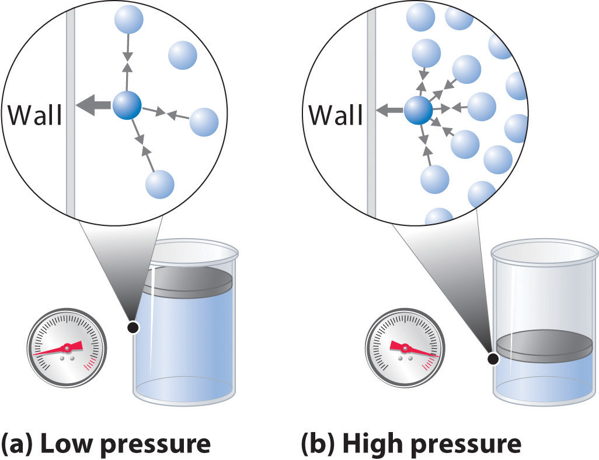(a) At low pressures, there are relatively few attractive intermolecular interactions to lessen the impact of the molecule striking the wall of the container, and the pressure is close to that predicted by the ideal gas law. (b) At high pressures, with the average intermolecular distance relatively small, the effect of intermolecular interactions is to lessen the impact of a given molecule striking the container wall, resulting in a lower pressure than predicted by the ideal gas law.
The correction for volume is negative, but the correction for pressure is positive to reflect the effect of each factor on V and P, respectively. Because nonzero molecular volumes produce a measured volume that is larger than that predicted by the ideal gas law, we must subtract the molecular volumes to obtain the actual volume available. Conversely, attractive intermolecular forces produce a pressure that is less than that expected based on the ideal gas law, so the an2/V2 term must be added to the measured pressure to correct for these effects.
You are in charge of the manufacture of cylinders of compressed gas at a small company. Your company president would like to offer a 4.0 L cylinder containing 500 g of chlorine in the new catalog. The cylinders you have on hand have a rupture pressure of 40 atm. Use both the ideal gas law and the van der Waals equation to calculate the pressure in a cylinder at 25°C. Is this cylinder likely to be safe against sudden rupture (which would be disastrous and certainly result in lawsuits because chlorine gas is highly toxic)?
Given: volume of cylinder, mass of compound, pressure, and temperature
Asked for: safety
Strategy:
A Use the molar mass of chlorine to calculate the amount of chlorine in the cylinder. Then calculate the pressure of the gas using the ideal gas law.
B Obtain a and b values for Cl2 from Table 10.5 "van der Waals Constants for Some Common Gases". Use the van der Waals equation to solve for the pressure of the gas. Based on the value obtained, predict whether the cylinder is likely to be safe against sudden rupture.
Solution:
A We begin by calculating the amount of chlorine in the cylinder using the molar mass of chlorine (70.906 g/mol):
Using the ideal gas law and the temperature in kelvins (298 K), we calculate the pressure:
If chlorine behaves like an ideal gas, you have a real problem!
B Now let’s use the van der Waals equation with the a and b values for Cl2 from Table 10.5 "van der Waals Constants for Some Common Gases". Solving for P gives
This pressure is well within the safety limits of the cylinder. The ideal gas law predicts a pressure 15 atm higher than that of the van der Waals equation.
Exercise
A 10.0 L cylinder contains 500 g of methane. Calculate its pressure to two significant figures at 27°C using the
Answer: a. 77 atm; b. 67 atm
LiquefactionThe condensation of gases into a liquid form. of gases is the condensation of gases into a liquid form, which is neither anticipated nor explained by the kinetic molecular theory of gases. Both the theory and the ideal gas law predict that gases compressed to very high pressures and cooled to very low temperatures should still behave like gases, albeit cold, dense ones. As gases are compressed and cooled, however, they invariably condense to form liquids, although very low temperatures are needed to liquefy light elements such as helium (for He, 4.2 K at 1 atm pressure).
Liquefaction can be viewed as an extreme deviation from ideal gas behavior. It occurs when the molecules of a gas are cooled to the point where they no longer possess sufficient kinetic energy to overcome intermolecular attractive forces. The precise combination of temperature and pressure needed to liquefy a gas depends strongly on its molar mass and structure, with heavier and more complex molecules usually liquefying at higher temperatures. In general, substances with large van der Waals a coefficients are relatively easy to liquefy because large a coefficients indicate relatively strong intermolecular attractive interactions. Conversely, small molecules with only light elements have small a coefficients, indicating weak intermolecular interactions, and they are relatively difficult to liquefy. Gas liquefaction is used on a massive scale to separate O2, N2, Ar, Ne, Kr, and Xe. After a sample of air is liquefied, the mixture is warmed, and the gases are separated according to their boiling points. In Chapter 11 "Liquids", we will consider in more detail the nature of the intermolecular forces that allow gases to liquefy.
A large value of a indicates the presence of relatively strong intermolecular attractive interactions.
The ultracold liquids formed from the liquefaction of gases are called cryogenic liquidsAn ultracold liquid formed from the liquefaction of gases., from the Greek kryo, meaning “cold,” and genes, meaning “producing.” They have applications as refrigerants in both industry and biology. For example, under carefully controlled conditions, the very cold temperatures afforded by liquefied gases such as nitrogen (boiling point = 77 K at 1 atm) can preserve biological materials, such as semen for the artificial insemination of cows and other farm animals. These liquids can also be used in a specialized type of surgery called cryosurgery, which selectively destroys tissues with a minimal loss of blood by the use of extreme cold.
Figure 10.25 A Liquid Natural Gas Transport Ship
Moreover, the liquefaction of gases is tremendously important in the storage and shipment of fossil fuels (Figure 10.25 "A Liquid Natural Gas Transport Ship"). Liquefied natural gas (LNG) and liquefied petroleum gas (LPG) are liquefied forms of hydrocarbons produced from natural gas or petroleum reserves. LNG consists mostly of methane, with small amounts of heavier hydrocarbons; it is prepared by cooling natural gas to below about −162°C. It can be stored in double-walled, vacuum-insulated containers at or slightly above atmospheric pressure. Because LNG occupies only about 1/600 the volume of natural gas, it is easier and more economical to transport. LPG is typically a mixture of propane, propene, butane, and butenes and is primarily used as a fuel for home heating. It is also used as a feedstock for chemical plants and as an inexpensive and relatively nonpolluting fuel for some automobiles.
No real gas exhibits ideal gas behavior, although many real gases approximate it over a range of conditions. Deviations from ideal gas behavior can be seen in plots of PV/nRT versus P at a given temperature; for an ideal gas, PV/nRT versus P = 1 under all conditions. At high pressures, most real gases exhibit larger PV/nRT values than predicted by the ideal gas law, whereas at low pressures, most real gases exhibit PV/nRT values close to those predicted by the ideal gas law. Gases most closely approximate ideal gas behavior at high temperatures and low pressures. Deviations from ideal gas law behavior can be described by the van der Waals equation, which includes empirical constants to correct for the actual volume of the gaseous molecules and quantify the reduction in pressure due to intermolecular attractive forces. If the temperature of a gas is decreased sufficiently, liquefaction occurs, in which the gas condenses into a liquid form. Liquefied gases have many commercial applications, including the transport of large amounts of gases in small volumes and the uses of ultracold cryogenic liquids.
What factors cause deviations from ideal gas behavior? Use a sketch to explain your answer based on interactions at the molecular level.
Explain the effect of nonzero atomic volume on the ideal gas law at high pressure. Draw a typical graph of volume versus 1/P for an ideal gas and a real gas.
For an ideal gas, the product of pressure and volume should be constant, regardless of the pressure. Experimental data for methane, however, show that the value of PV decreases significantly over the pressure range 0 to 120 atm at 0°C. The decrease in PV over the same pressure range is much smaller at 100°C. Explain why PV decreases with increasing temperature. Why is the decrease less significant at higher temperatures.
What is the effect of intermolecular forces on the liquefaction of a gas? At constant pressure and volume, does it become easier or harder to liquefy a gas as its temperature increases? Explain your reasoning. What is the effect of increasing the pressure on the liquefaction temperature?
Describe qualitatively what a and b, the two empirical constants in the van der Waals equation, represent.
In the van der Waals equation, why is the term that corrects for volume negative and the term that corrects for pressure positive? Why is n/V squared?
Liquefaction of a gas depends strongly on two factors. What are they? As temperature is decreased, which gas will liquefy first—ammonia, methane, or carbon monoxide? Why?
What is a cryogenic liquid? Describe three uses of cryogenic liquids.
Air consists primarily of O2, N2, Ar, Ne, Kr, and Xe. Use the concepts discussed in this chapter to propose two methods by which air can be separated into its components. Which component of air will be isolated first?
How can gas liquefaction facilitate the storage and transport of fossil fuels? What are potential drawbacks to these methods?
The van der Waals constants for xenon are a = 4.19 (L2·atm)/mol2 and b = 0.0510 L/mol. If a 0.250 mol sample of xenon in a container with a volume of 3.65 L is cooled to −90°C, what is the pressure of the sample assuming ideal gas behavior? What would be the actual pressure under these conditions?
The van der Waals constants for water vapor are a = 5.46 (L2·atm)/mol2 and b = 0.0305 L/mol. If a 20.0 g sample of water in a container with a volume of 5.0 L is heated to 120°C, what is the pressure of the sample assuming ideal gas behavior? What would be the actual pressure under these conditions?
Previous Essential Skills sections presented the fundamental mathematical operations you need to know to solve problems by manipulating chemical equations. This section describes how to prepare and interpret graphs, two additional skills that chemistry students must have to understand concepts and solve problems.
A graph is a pictorial representation of a mathematical relationship. It is an extremely effective tool for understanding and communicating the relationship between two or more variables. Each axis is labeled with the name of the variable to which it corresponds, along with the unit in which the variable is measured, and each axis is divided by tic marks or grid lines into segments that represent those units (or multiples). The scale of the divisions should be chosen so that the plotted points are distributed across the entire graph. Whenever possible, data points should be combined with a bar that intersects the data point and indicates the range of error of the measurement, although for simplicity the bars are frequently omitted in undergraduate textbooks. Lines or curves that represent theoretical or computational results are drawn using a “best-fit” approach; that is, data points are not connected as a series of straight-line segments; rather, a smooth line or curve is drawn that provides the best fit to the plotted data.
The independent variable is usually assigned to the horizontal, or x, axis (also called the abscissa), and the dependent variable to the vertical, or y, axis (called the ordinate). Let’s examine, for example, an experiment in which we are interested in plotting the change in the concentration of compound A with time. Because time does not depend on the concentration of A but the concentration of A does depend on the amount of time that has passed during the reaction, time is the independent variable and concentration is the dependent variable. In this case, the time is assigned to the horizontal axis and the concentration of A to the vertical axis.
We may plot more than one dependent variable on a graph, but the lines or curves corresponding to each set of data must be clearly identified with labels, different types of lines (a dashed line, for example), or different symbols for the respective data points (e.g., a triangle versus a circle). When words are used to label a line or curve, either a key identifying the different sets of data or a label placed next to each line or curve is used.
Two types of graphs are frequently encountered in beginning chemistry courses: linear and log-linear. Here we describe each type.
In a linear graph, the plot of the relationship between the variables is a straight line and thus can be expressed by the equation for a straight line:
y = mx + bwhere m is the slope of the line and b is the point where the line intersects the vertical axis (where x = 0), called the y-intercept. The slope is calculated using the following formula:
For accuracy, two widely separated points should be selected for use in the formula to minimize the effects of any reporting or measurement errors that may have occurred in any given region of the graph. For example, when concentrations are measured, limitations in the sensitivity of an instrument as well as human error may result in measurements being less accurate for samples with low concentrations than for those that are more concentrated. The graph of the change in the concentration of A with time is an example of a linear graph. The key features of a linear plot are shown on the generic example.
It is important to remember that when a graphical procedure is used to calculate a slope, the scale on each axis must be of the same order (they must have the same exponent). For example, although acceleration is a change in velocity over time (Δv/Δt), the slope of a linear plot of velocity versus time only gives the correct value for acceleration (m/s2) if the average acceleration over the interval and the instantaneous acceleration are identical; that is, the acceleration must be constant over the same interval.
A log-linear plot is a representation of the following general mathematical relationship:
y = AcmxHere, y is equal to some value Ac when x = 0. As described in Essential Skills 3 in Chapter 4 "Reactions in Aqueous Solution", Section 4.10 "Essential Skills 3", taking the logarithm of both sides produces
log y = log A + mx log c = (m log c)x + log AWhen expressed in this form, the equation is that of a straight line (y = mx + b), where the plot of y is on a logarithmic axis and (m log c)x is on a linear axis. This type of graph is known as a log-linear plot. Log-linear plots are particularly useful for graphing changes in pH versus changes in the concentration of another substance. One example of a log-linear plot, where y = [HA] and x = pH, is shown here:
From the linear equation, a log-linear plot has a y-intercept of log A, so the value of A may be obtained directly from the plot if the x axis begins at 0 (in this case it does not, as is often the case in pH plots). Using our example, however, we can calculate [HA] at the y-intercept first by calculating the slope of the line using any two points and the equation
Using any point along the line (e.g., [HA] = 0.100, pH = 2.9), we can then calculate the y-intercept (pH = 0):
Thus at a pH of 0.0, log[HA] = 4.8 and [HA] = 6.31 × 104 M. The exercises provide practice in drawing and interpreting graphs.
The absorbance of light by various aqueous solutions of phosphate was measured and tabulated as follows:
| Absorbance (400 nm) | PO43− (mol/L) |
|---|---|
| 0.16 | 3.2 × 10−5 |
| 0.38 | 8.4 × 10−5 |
| 0.62 | 13.8 × 10−5 |
| 0.88 | 19.4 × 10−5 |
Graph the data with the dependent variable on the y axis and the independent variable on the x axis and then calculate the slope. If a sample has an absorbance of 0.45, what is the phosphate concentration in the sample?
The following table lists the conductivity of three aqueous solutions with varying concentrations. Create a plot from these data and then predict the conductivity of each sample at a concentration of 15.0 × 103 ppm.
| 0 ppm | 5.00 × 103 ppm | 10.00 × 103 ppm | |
|---|---|---|---|
| K2CO3 | 0.0 | 7.0 | 14.0 |
| Seawater | 0.0 | 8.0 | 15.5 |
| Na2SO4 | 0.0 | 6.0 | 11.8 |
Solution:
Absorbance is the dependent variable, and concentration is the independent variable. We calculate the slope using two widely separated data points:
According to our graph, the y-intercept, b, is 0.00. Thus when y = 0.45,
0.45 = (4.3 × 103)(x) + 0.00 x = 10 × 10−5This is in good agreement with a graphical determination of the phosphate concentration at an absorbance of 0.45, which gives a value of 10.2 × 10−5 mol/L.
Conductivity is the dependent variable, and concentration is the independent variable. From our graph, at 15.0 × 103 ppm, the conductivity of K2CO3 is predicted to be 21; that of seawater, 24; and that of Na2SO4, 18.
Be sure you are familiar with the material in Essential Skills 5 (Section 10.9 "Essential Skills 5") before proceeding to the Application Problems. Problems marked with a ♦ involve multiple concepts.
♦ Oxalic acid (C2H2O4) is a metabolic product of many molds. Although oxalic acid is toxic to humans if ingested, many plants and vegetables contain significant amounts of oxalic acid or oxalate salts. In solution, oxalic acid can be oxidized by air via the following chemical equation:
H2C2O4(aq) + O2(g) → H2O2(l) + 2 CO2(g)If a plant metabolized enough oxalic acid to produce 3.2 L of CO2 on a day when the temperature was 29°C and the pressure was 752 mmHg, how many grams of oxalic acid were converted to CO2? Given that air is 21% oxygen, what volume of air was needed for the oxidation?
♦ The decomposition of iron oxide is used to produce gas during the manufacture of porous, expanded materials. These materials have very low densities due to the swelling that occurs during the initial rapid heating. Consequently, they are used as additives to provide insulation in concrete, road building, and other construction materials. Iron oxide decomposes at 1150°C according to the following chemical equation:
6 Fe2O3(s) → 4 Fe3O4(s) + O2(g)♦ A 70 kg man expends 480 kcal of energy per hour shoveling snow. The oxidation of organic nutrients such as glucose during metabolism liberates approximately 3.36 kcal of energy per gram of oxygen consumed. If air is 21% oxygen, what volume of air at STP is needed to produce enough energy for the man to clear snow from a walkway that requires 35 minutes of shoveling?
♦ Calcium carbonate is an important filler in the processing industry. Its many uses include a reinforcing agent for rubber and improving the whiteness and hiding power of paints. When calcium nitrate is used as a starting material in the manufacture of fertilizers, calcium carbonate is produced according to the following chemical reaction:
Ca(NO3)2 + 2 NH3 + CO2 + H2O → CaCO3 + 2 NH4NO3♦ Calcium nitrate used in the process described in Problem 4 is produced by the reaction of fluoroapatite—Ca5[(PO4)3(F)]—with nitric acid:
Ca5[(PO4)3(F)] + 10 HNO3 → 5 Ca(NO3)2 + HF + 3 H3PO4 Ca(NO3)2 + 2 NH3 + CO2 + H2O → CaCO3 + 2 NH4NO3Mars has an average temperature of −47°C; a surface pressure of 500 Pa; and an atmosphere that is 95% carbon dioxide, 3% nitrogen, and 2% argon by mass, with traces of other gases. What is the partial pressure (in atmospheres) of each gas in this atmosphere? A 5.0 L sample is returned to Earth and stored in a laboratory at 19°C and 1 atm. What is the volume of this sample?
♦ Chlorofluorocarbons (CFCs) are inert substances that were long used as refrigerants. Because CFCs are inert, when they are released into the atmosphere they are not rapidly destroyed in the lower atmosphere. Instead, they are carried into the stratosphere, where they cause ozone depletion. A method for destroying CFC stockpiles passes the CFC through packed sodium oxalate (Na2C2O4) powder at 270°C. The reaction for Freon-12 (CF2Cl2) is as follows:
CF2Cl2(g) + 2 Na2C2O4(s) → 2 NaF(s) + 2 NaCl + C(s) + 4 CO2(g)♦ The exhaust from a typical six-cylinder car contains the following average compositions of CO and CO2 under different conditions (data reported as percent by volume; rpm = rotations per minute):
| Species | Idling (1000 rpm) | Accelerating (4000 rpm) | Decelerating (800 rpm) |
|---|---|---|---|
| CO | 1.0 | 1.2 | 0.60 |
| CO2 | 0.80 | 0.40 | 0.40 |
Automobile airbags inflate by the decomposition of sodium azide (NaN3), which produces sodium metal and nitrogen gas according to the following chemical equation:
2 NaN3 → 2 Na(s) + 3 N2(g)How many grams of sodium azide are needed to inflate a 15.0 L airbag at 20°C and 760 mmHg? The density of NaN3 is 1.847 g/cm3. What is the volume of the gas produced compared to the solid reactant? Suggest a plausible reason to explain why skin burns can result from the inflation of an airbag during an automobile accident.
Under basic conditions, the reaction of hydrogen peroxide (H2O2) and potassium permanganate (KMnO4) produces oxygen and manganese dioxide. During a laboratory exercise, you carefully weighed out your sample of KMnO4. Unfortunately, however, you lost your data just before mixing the KMnO4 with an H2O2 solution of unknown concentration. Devise a method to determine the mass of your sample of KMnO4 using excess H2O2.
Carbonated beverages are pressurized with CO2. In an attempt to produce another bubbly soda beverage, an intrepid chemist attempted to use three other gases: He, N2, and Xe. Rank the four beverages in order of how fast the drink would go “flat” and explain your reasoning. Which beverage would have the shortest shelf life (i.e., how long will an unopened bottle still be good)? Explain your answer.
♦ Urea is synthesized industrially by the reaction of ammonia and carbon dioxide to produce ammonium carbamate, followed by dehydration of ammonium carbamate to give urea and water. This process is shown in the following set of chemical equations:
2 NH3(g) + CO2(g) → NH2CO2NH4(s) NH2CO2NH4(s) → NH2CONH2(s) + H2O(g)Explain what happens to the temperature, the volume, or the pressure of a gas during each operation and give the direction of heat flow, if any.
These four processes constitute the cycle used in refrigeration, in which a gas such as Freon is alternately compressed and allowed to expand in the piston of a compressor. Which step eventually causes the food in a refrigerator to cool? Where does the thermal energy go that was removed in the cooling process?
5.9 g oxalic acid, 7.8 L
278 L